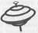

VÉRONIQUE BRÉGER
OPEN SPACE

KTM éditions
© KTM éditions, 2009
15, rue Claude Tillier - 75012 Paris
ISBN 978-2-913066-40-3
Pour Pat,
Ma lampe-tempête à toute épreuve
Tout est dans le commencement. Le début. Les cinq premières secondes sont déterminantes pour la suite.
L’instinct, l’idée que l’on s’en fait, les préjugés, les habitudes, tout se met en vrac, dans le sac.
Le tri s’organise après, avec le temps.
Au final, il faut se rendre à l’évidence... on le savait !
Prologue
Il fait nuit. Une nuit sombre et froide. Une nuit d’hiver. Au loin, les lumières de la ville scintillent dans l’atmosphère couronnée de vapeurs humaines. Ici, les réverbères délimitent le tracé de routes enchevêtrées, tels des serpents lumineux égarés en pleine campagne. Des façades d’entrepôts anonymes et sans fenêtres peuplent le paysage de leurs hautes statures fantomatiques. La vie semble avoir déserté les lieux. De rares bouches d’égout laissent échapper les relents d’une activité qui ne démarrera qu’aux lueurs de l’aube. Zone industrielle de l’Éden, nord de Paris. On ne sait pas qui a eu l’idée de baptiser ainsi cet endroit. Un maire poète, un politicien en manque de reconnaissance, un chantre de l’écologie ? L’alignement des cubes en béton ne se prête guère aux débordements de fantaisie. Même les animaux es forêts avoisinantes ne s’aventurent pas à proximité des hauts grillages. Le silence extérieur semble tout envelopper, cependant, il offre un contraste saisissant avec le déluge de l’activité dissimulée au sein des bâtiments. Zone industrielle de l’Éden, nord de Paris. Deux heures et trente-trois minutes. L’immeuble situé au fond de l’impasse des Edelweiss a le gabarit d’un supermarché. Ses murs abritent plusieurs salles d’hébergement spécialisées, appelées data centers par les professionnels. L’espace de stockage regroupe un parc de cinq cents serveurs dans une ambiance de réfrigérateur. Les armoires anthracite garnies de machines semblables à des unités centrales de C sont alignées sur le dallage blanc des faux planchers. Plusieurs milliers de kilomètres de câbles se partagent les espaces disponibles dans les gaines de sécurité et contribuent au transport de données aux quatre coins de l’Europe. Deux heures et trente-cinq minutes. Derrière les façades noires des machines, les programmes informatiques déroulent et enchaînent les traitements. Toutes les informations saisies la veille dans les deux mille cinq cents agences du groupe bancaire SO-TE-CO sont récupérées, ventilées, compilées, triées, regroupées, comparées, diffusées. Des millions d’opérations transitent, s’additionnent, se soustraient, se divisent, se multiplient. Demain à l’ouverture des guichets, chaque agent sera en mesure de connaître le détail de son portefeuille de débit/crédit. Agios, intérêts, rendements, pertes, actions à mener, recouvrements, virements, tout est consigné avec une précision de métronome. Deux heures et trente-neuf minutes. Le trafic s’intensifie. Les voyants verts, rouges, bleus, rythment la cadence. Au milieu des baies remplies de commutateurs, de convertisseurs de signaux, de routeurs, un appareil aux allures de bac à dossiers se distingue de ses semblables. On a isolé dans un recoin de la salle ce serveur ancienne génération, car il ne rentrait pas dans les standards en vigueur. Nul ne connaît ses fonctionnalités, on se contente de s’assurer que l’écran de son moniteur renvoie le message attendu comme indiqué dans la procédure.
« Programmes en cours... »
Les quatre boutons lumineux présents en façade signalent que chaque disque dur correspondant est opérationnel. Deux heures et quarante-trois minutes. Lun des voyants se met à clignoter au rythme des battements d’un cœur. La cadence s’accélère. L’écran de contrôle, imperturbable, affiche toujours le même message.
« Programmes en cours... »
Deux heures et quarante-quatre minutes. Le tempo atteint son paroxysme. Le ventilateur se met en marche dans un bruit de hamster en cage. Il gratte. Il soupire. Il s’époumone. Deux heures et quarante-cinq minutes. La lueur verte se fige un bref instant. Le hamster virtuel passe la troisième et continue son périple aventureux, eux heures et quarante-six minutes. Un bip sonore retentit dans le data center, telle une lointaine sirène à l’agonie. Le voyant du disque dur numéro trois vient de s’éteindre.
1
Anne-Lise regarda sa montre. Elle était en retard. Une constante de la vie en région parisienne, on sait quand on part, on ne sait pas quand on arrive. Elle pesta. Obligée de laisser sa voiture chez le garagiste pour cause de révision, elle avait enchaîné avec le REK. Tout ce qu’elle aimait. Démarrer la journée par une file d’attente devant le comptoir du concessionnaire. Signer la feuille de travaux, donner les clés, se hâter pour sauter dans le train de 8 h 06, profiter du crachin glacé – un bonheur ne vient jamais seul – changer de station à Châtelet, puis à celle de Saint-Lazare. Les mauvaises odeurs, le bruit, les gens agglutinés. Lorsqu’elle s’extirpa de la bouche de métro, la bruine lui sembla une aubaine. Elle traversa l’avenue qui menait à son entreprise en longeant les baies vitrées d’un immeuble de bureaux. Le mat du verre teinté lui renvoya le reflet d’une femme pressée au teint pâle. Son manteau ouvert dévoilait le tailleur-pantalon gris et la chemise blanche. Elle plaqua sa besace contre sa poitrine généreuse tout en évitant de s’attarder sur une silhouette en manque d’activité sportive. Son mètre soixante-neuf compensait encore les dix kilos accumulés au fil du temps. Une bourrasque acheva de décoiffer ses cheveux châtains mi-longs. Elle hâta le pas. Après trois cents mètres de marche forcée, elle s’engouffra dans l’entrée de l’immeuble en verre. Dans le hall du siège du groupement bancaire SO-TE-CO, une foule d’hommes pingouins studieux patientait dans l’attente de leur rendez-vous. Elle posa son badge contre le portique et suivit le mouvement du tourniquet en verre. Plusieurs personnes attendaient devant les quatre ascenseurs principaux qui desservaient le building, du rez-de-jardin au neuvième étage. Le bureau d’Anne-Lise se situait au septième. Malgré la promiscuité induite par l’organisation en open space, la jeune femme appréciait son agencement. De hautes baies vitrées offraient une vue panoramique des berges de la Seine jusqu’aux tours de La Défense. Elle admirait, à l’occasion, les levers ou les couchers de soleil sur le quartier des affaires. C’était moins romantique qu’une vue sur mer, toutefois le spectacle proposé par le peintre céleste lui paraissait à chaque fois grandiose. Ce matin, la grisaille brouillait le paysage. Anne-Lise poussa la porte sur laquelle un panneau indiquait les mentions Finance, Gestion, Ressources humaines et emprunta le couloir éclairé qui menait au plateau. Dès qu’elle franchit l’entrée, elle comprit que la journée allait être à l’image de son début de matinée, pourrie.
— Bonjour Anne-Lise. Olivier t’attend.
Françoise, l’assistante de direction, se dirigeait vers la machine à café en courant. Françoise courait toujours. Depuis trois ans qu’Anne-Lise la cotoyait, jamais elle ne l’avait vue marcher.
— Ça à l’air urgent ! s’exclama-t-elle en disparaissant dans la salle de pause.
— J’y vais... Bonjour Françoise...
Anne-Lise se débarrassa de son manteau, largua son sac dans son armoire et s’empara d’un bloc. Le bureau d’Olivier Meyrac se situait à vingt mètres du sien. Elle frappa et entra dans l’antre du directeur administratif et financier.
— Ah Anne-Lise !
La jeune femme se contracta. La formule s’apparentait à : Enfin vous voilà ! Je vous attendais ! Vous savez que je n’ai pas que cela à faire ! J’ai un problème ! Vous avez jusqu’a hier pour le résoudre !
— Bonjour Olivier, répondit-elle sans sourire.
— Connaissez-vous Compil CA ?
Anne-Lise s’installa en face du dirigeant sans y avoir été invitée. La question frôlait les limites du ridicule. Bien sûr, elle connaissait le programme Compil CA. La fonction de garante des systèmes d’informations qu’elle occupait mettait Compil CA sous sa responsabilité. Tu as décidé de faire de l’humour ce matin, mon petit Olivier, songea-t-elle en faisant la moue. Tu ne peux pas avoir oublié que depuis trois ans, toi et ton comité de direction, vous refusez la mise en œuvre du dossier de refonte technique que je vous présente.
— C’est l’application qui permet de faire, au quotidien, la synthèse des chiffres d’affaires de toutes les agences de métropole.
— Savez-vous où se trouve la machine de la base de données ?
Anne-Lise regarda son patron en essayant de masquer sa surprise. Les manches retroussées de sa chemise lui donnaient un faux air d’ouvrier du dimanche en goguette. Derrière les fines lunettes cerclées de métal, elle croisa un regard dépourvu de malice. Depuis quand, a-t-il besoin de savoir où l’on stocke les serveurs ?
— Aucune idée. La direction de l’informatique garde l’adresse des data centers plus précieusement qu’un secret défense. Tous les serveurs ont déménagé, il y a environ huit mois. On a dû les répertorier à cette occasion.
— Eh bien, voyez-vous, Anne-Lise, on a oublié l’endroit où est rangée cette machine. Ce matin c’est le black-out. Les chiffres ne sont pas arrivés et pas un de ces foutus informaticiens n’est capable de me dire pourquoi !
Le ton venait de monter d’un cran. Le brillant quadragénaire manageait ses équipes au rythme d’un cent mètres permanent et avec une tolérance zéro envers les absences de réponses. Anne-Lise se leva. La courte conversation venait de se terminer.
— Je m’en occupe et je vous tiens informé.
— Je pars en réunion avec la direction générale Europe à 10 h 30. Donnez les chiffres à Françoise dès que vous les aurez.
La messe était dite et l’emploi du temps des prochaines heures balisé. Anne-Lise regagna 1 espace qu’elle partageait avec Bernard Bruvère, le contrôleur de gestion du siège et deux stagiaires, Aline et Tia. Elle salua ses collègues, s’installa à son poste et alluma son micro. Sa messagerie affichait trente-cinq messages non lus en provenance de différents services, tous relatifs au plantage de Compil CA. Elle tenta une connexion au système, au cas où. Sans succès.
— Fait chier, maugréa-t-elle tout en réfléchissant à la meilleure façon de passer à l’abordage du problème.
— On a un souci avec les chiffres.
Le lumineux constat énoncé par son vis-à-vis la laissa perplexe. Elle adressa un regard sans expression à Bernard Bruvère. Le petit homme chauve et bedonnant se situait aux antipodes du concept de la sympathie. Revêche et coincé au niveau des zygomatiques, ses compétences professionnelles ne parvenaient pas à le rendre indispensable aux yeux d’Anne-Lise. En un mot, elle le trouvait insupportable. Sentiment que partageaient Aline et Tia. Les deux jeunes femmes lui adressèrent un clin d’œil de connivence. Anne-Lise décrocha son téléphone tout en commençant la rédaction d’un mail à destination des équipes utilisant Compil CA. L’heure n’était pas aux états d’âme. Six appels et huit interlocuteurs plus tard, elle n’en savait pas plus sur les raisons de l’incident. Compil CA demeurait inaccessible et au sein de la direction des systèmes d’informations, personne ne paraissait connaître l’existence du serveur hébergeant la base de données.
— Je vais chercher un café, dit Tia en se levant. Tu en veux un ? demanda-t-elle en s’adressant directement à Anne-Lise.
— Oui merci.
— Long, sans sucre, n’est-ce pas ?
Anne-Lise adressa un sourire à l’Eurasienne. Tia était la dernière stagiaire à avoir intégré le service du contrôle de gestion, six mois plus tôt. Elle partageait son temps entre une école de commerce et la SO-TE-CO où elle travaillait trois jours par semaine. Son tempérament enjoué et ses aptitudes professionnelles en faisaient une collaboratrice agréable et efficace. Bruvère ne mérite pas une telle perle, pensait Anne-Lise. Au-delà des apparences, une silencieuse affinité s’était créée entre elles. Anne-Lise se doutait de l’une des causes de l’engouement dont elle était l’objet. Toutefois, si elle se montrait avenante, elle n’en gardait pas moins ses distances. Tia était disponible, pas elle. Le téléphone sonna. Elle décrocha.
— Salut Hubert ! Donne-moi de bonnes nouvelles !
Hubert Gérard, le responsable du suivi des flux informatiques, se racla la gorge.
— Hello Anne-Lise. C’est le bordel.
— Le mot est faible ! Tu en es où ?
— J’ai retrouvé ta machine.
— C’est quoi le problème ?
— Attends. Je t’explique. Je viens d’avoir un des gus qui bossent dans le data center. D’après lui, un des disques est mort.
— Et alors ? De mémoire, ce serveur dispose de quatre disques, justement pour pallier ce genre d’incident. La bascule doit se faire automatiquement non ?
— Ce n’est pas si simple...
— Ah oui, j’oubliais, je ne suis qu’une petite utilisatrice avec des rêves plein la tête, répondit Anne-Lise en soupirant.
— On ne sait pas pourquoi le disque a planté tous les traitements.
— Encore une preuve de la bonne surveillance de nos machines...
— Le serveur est arrêté.
— Normal. Ça ne choque personne. Qu’est-ce qui est prévu ?
— Rien pour l’instant.
— Et comment on fait pour bosser nous ?
— J’ai besoin d’une demande d’intervention.
— Tu l’as !
— Anne-Lise, tu sais de quoi je parle...
La jeune femme retint le juron qui montait à ses lèvres. Depuis la récente réorganisation de la direction des systèmes d’informations, seul un appel vers le centre d’assistance permettait de déclencher le sésame du dépannage.
— Je verrai après. Je veux un plan d’action pour gérer l’urgence.
— On va débrancher et redémarrer. Je te tiens au courant.
— OK. À plus.
Elle raccrocha tandis que le nom de l’assistante de son patron s’affichait sur le récepteur.
— Françoise...
— Désolée Anne-Lise, M. Meyrac demande où on en est avec les chiffres.
Anne-Lise regarda l’horloge Windows, elle affichait 10h29.
— Je crains qu’il ne faille appeler toutes les agences une par une, commença Anne-Lise en jetant un regard insistant vers Bernard Bruvère. Le problème est identifié, mais je ne sais pas encore à quelle heure il sera résolu.
— Peux-tu me passer M. Bruvère.
— Bien sûr Françoise.
Anne-Lise composa le numéro de son collègue et transféra l’appel.
— Françoise veut te parler, murmura-t-elle en esquissant une mimique de satisfaction.
Elle connaissait d’avance l’objet du court échange qui allait suivre. Françoise se contentait de transmettre la demande d’Olivier Meyrac. Une machine en panne n’empêchait pas de récupérer les chiffres d’affaires. Bernard Bruvère venait de gagner sa part de pression matinale. Anne-Lise attrapa le gobelet que Tia venait de poser à proximité d’un pot rempli de crayons. L’arôme du café s’insinua dans ses narines. Elle aimait cette odeur plus que le breuvage en soi. Elle abandonna un instant son écran d’ordinateur et se concentra sur le paysage extérieur. Une escouade de cormorans en quête d’une pêche miraculeuse traversa la Seine. J’ai besoin de changer d’air. On pourrait partir en vacances. Une quinzaine de jours au soleil. Que du bonheur. Si seulement... Si seulement le bonheur existait encore. La musique du combiné l’arracha à ses réflexions bucoliques teintées de gris.
— C’est Hubert.
— Yes.
— Ça a fonctionné.
— Quoi ?
— Ta machine. On l’a éteinte, rallumée et on a un bel écran qui nous dit que le programme est en cours.
— Ce n’est pas ma machine Hubert. Je me connecte.
Anne-Lise tapa son identifiant et son mot de passe. Une minute de sablier plus tard, elle atterrit sur la page d’accueil. Elle lança la visualisation d’un tableau. Il s’afficha. Vide.
— Alors ?
— J’accède mais je ne vois pas les chiffres.
— Mince.
— Pas mieux.
— Qu’est-ce qu’on fait ?
— Je regarde la journée d’avant-hier. C’est bon, j’ai des données. Il faut relancer le traitement de cette nuit.
— Maintenant ?
— Qu’en penses-tu ?
— Tu sais moi je ne pense pas.
— Je parle de la durée du traitement.
— Aucune idée ! Je me mets derrière et je pédale.
— C’est bon pour les mollets. Rappelle-moi quand tu auras franchi l’arrivée.
Un quart d’heure plus tard, Anne-Lise reçut un mail d’Hubert l’informant de la disponibilité des données pour midi. La deuxième partie du message était moins optimiste. Les risques d’un nouvel incident de ce type s’élevaient à 95 %. Avec 5 % de marge, il restait peu de chance d’y échapper. Je suis bonne pour être présente aux aurores tous les matins, pensa Anne-Lise en faisant la grimace. Se lever tôt ne lui posait aucun problème. Elle était l’une des habituées de la première heure au bureau. Seule la contrainte de le faire l’ennuyait. Elle rédigea sans attendre une note d’information à l’ensemble des utilisateurs de Compil CA. Puis une seconde, à l’attention de son boss. Il était temps de ressortir le dossier de refonte technique de l’application, si l’on souhaitait continuer de recevoir les chiffres journaliers. Pourquoi ne réagit-on que lorsque Von est dans le mur ? La réflexion lui arracha un rictus. Au-delà de la vérité professionnelle, se profilait celle appliquée à son quotidien personnel. Son poste téléphonique afficha deux abréviations qu’elle connaissait bien. Elle répondit à l’appel en provenance du siège administratif d’Evry et s’annonça par principe de précaution.
— Anne-Lise Bach, bonjour.
— Je suppose que tu ne vas pas rentrer tôt ce soir.
Il ne s’agissait pas d’une question. Pourquoi Julie ne la contactait-elle pas sur son mobile. Comme le ferait chaque conjoint ne travaillant pas dans la même entreprise. Sans doute parce que justement elles étaient aussi collègues.
— Les nouvelles vont vite.
— On a beau être à la compta, on se tient au courant des suivis de chiffres effectués par la gestion. Ta base est vraiment plantée ?
— Ce n’est pas ma base. Quant aux chiffres, ils seront en ligne en fin de matinée.
— Tu vas quand même rentrer tard ?
Anne-Lise soupira. L’endroit ne se prêtait pas aux explications de textes.
— Je te rappelle, conclut-elle en raccrochant.
Elle saisit son paquet de Marlboro et enfila son manteau.
— C’est mauvais pour ta santé.
Elle s’attendait à la remarque de Bernard Bruvère. Depuis la mise en application de la loi interdisant de fumer dans les lieux publics, il s’amusait à la titiller à chaque pause cigarette.
— Ce qui est mauvais pour ma santé, c’est d’être obligée de sortir des locaux quand il pleut.
— Tu n’as qu’à t’arrêter.
La même repartie systématique. Anne-Lise haussa 19 les sourcils et quitta l’espace du bureau. La pluie avait cessé. Elle apprécia l’aubaine et se réfugia dans l’un des recoins dédiés aux pestiférés de la fumette. Une dizaine de collègues se relayaient en permanence sous les auvents extérieurs. Les grades et les fonctions se mélangeaient. Les gens se parlaient. Anne-Lise avait sympathisé avec l’un des employés du service courrier. Un passionné de courses hippiques qui lui donnait un tuyau super-sûr par jour. Elle afficha le numéro de Julie.
— C’est moi.
— Tu as l’air énervé.
— Hum... murmura Anne-Lise en expectorant la fumée.
— Tu es sortie pour cloper ?
— Ecoute Julie, cela va faire trois ans que nous sommes ensemble et que je sache cela ne t’a pas posé de problème de vivre avec une fumeuse. Pourquoi m’appelais-tu ?
Cinq secondes de silence.
— Vers quelle heure rentres-tu ce soir ?
— T’as un rencard ou quoi ?
— Oui... Heu, disons que... enfin c’est un des collaborateurs du service qui fête son départ. On va manger ensemble et...
— Quel rapport avec mon emploi du temps ?
— Oh tu compliques tout !
— Je ne crois pas non. Tu veux ma permission ? Tu l’as. Et ne t’inquiète pas pour mes horaires pros.
— Qu’est-ce que tu peux être rabat-joie parfois.
— Ouais. On va dire ça. Passe une bonne soirée.
Anne-Lise coupa la communication sans attendre d’autres commentaires. Julie avait pris l’habitude de l’informer au dernier moment de ses sorties entre collègues. La fréquence s’accentuait. D’une par trimestre, on était passé a une par mois, puis à une par semaine. Le turnover du service de comptabilité générale de la SO-TE-CO était sans doute parmi l’un des plus élevés de la branche bancaire. Anne-Lise alluma une seconde cigarette. Tout foutait le camp et elle le sentait, Julie n’allait pas tarder à en faire autant. Elle resta les yeux dans le vague, en introspection. Son impuissance à faire face la consternait. Je n’ai peut-être pas envie de me battre pour la garder près de moi. Une poche en plastique chahutée par le vent traversa l’esplanade pavée de gris. Son portable vibra dans sa poche de veste.
— Oui Hubert.
— Tu as eu mon mail ?
— Yes mister.
— Ton serveur va être surveillé comme le lait sur le feu. Je ne veux pas avoir la direction générale sur le dos tous les jours.
— Cela ne règle pas le problème.
— Nous sommes d’accord.
— Je vais voir mon boss en début d’après-midi et lui proposer de relancer le dossier de refonte technique.
— Depuis que je t’entends en parler.
— Tu connais le principe, tant qu’on n’est pas dans le mur, on ne voit pas les risques.
— Au final, ce plantage est une aubaine et si tu ne savais pas quoi faire des six mois à venir, tu viens de te trouver une occupation.
— Ouais, le projet qui tombe à pic.
— J’organise une conf’ call à 19 heures C’est un peu technique, mais si tu pouvais te connecter pour représenter la direction.
— OK. J’attends le mail d’invitation.
Anne-Lise écrasa son mégot dans le bac à sable. La pause était terminée. Elle regagna son bureau. Un Post-it rose fluo posé sur son clavier accrocha son regard.
— Olivier te cherche, commença Bernard Bruvère sans lever le nez de son écran.
Anne-Lise ne répondit pas.
— Ça a l’air urgent...
Le contrôleur de gestion mettait ses nerfs à rude épreuve. Elle lui décocha un large sourire. Fais pas chier Bernard.
— Les chiffres seront disponibles vers midi.
L’autre la regarda sans avoir l’air de comprendre.
Anne-Lise savait qu’il venait de passer trois quarts d’heures à mettre en forme un fichier Excel pour établir une saisie manuelle et une synthèse nationale.
— Ah...
— Oui Bernard, ce n’est pas encore la Bérézina, conclut-elle avant de se diriger vers l’antre de son boss. Il s’apprêtait à repartir en réunion.
— Anne-Lise ! J’ai parcouru votre mémo. On n’a pas le choix. Revoyez votre dossier. Il sera présenté au comité financier du groupe mercredi.
Mercredi. Anne-Lise fit un décompte rapide. Elle disposait de trois jours pour effectuer une mise à jour complète. Présentation succincte de l’outil, problématiques, moyens à engager, retour sur investissement, étude des coûts. Une trentaine d’heures de boulot, au mieux. Restait le week-end. Qu’avait-elle prévu pour ses deux jours de repos ?
— Envoyez-moi votre présentation dès qu’elle sera prête. On se verra mardi soir pour un débrief.
Une nocturne en perspective. Julie allait apprécier.
— Vous l’aurez lundi.
— Merci Anne-Lise. On va le faire votre projet finalement...
Au nom du politiquement correct, la jeune femme se retint d’exprimer ses pensées. Elle se contenta de hocher la tête. Elle retrouva Tia affairée au démontage de l’imprimante du secteur.
— Un problème ?
— J’ai cinq minutes à tuer, alors je m’entraîne sur la dissection de matériel récalcitrant.
Anne-Lise s’approcha de la stagiaire dont les mains couvertes de noir traduisaient l’impuissance.
— On dirait que la cartouche a explosé à l’intérieur.
— Laisse-moi essayer, proposa Anne-Lise en s’avançant vers le meuble sur lequel était posée la machine.
— Fais gaffe à ton chemisier.
Tia s’écarta tout en jetant un regard non dépourvu d’ambiguïté vers l’échancrure ouverte. Anne-Lise baissa les yeux. Par quelle magie le troisième bouton s’était-il échappé de son emplacement ? Elle se concentra sur le bac béant.
— En effet...
— Qu’est-ce que tu en penses ?
— Sans cette bécane, le service serait obligé de faire cinquante kilomètres par jour pour récupérer ses éditions sur l’une des imprimantes générales. On va trouver une solution...
Anne-Lise désossa l’appareil sans broncher, jusqu’à ce que le socle soit vide. Elle évacua la cartouche défectueuse dans la corbeille, en prenant soin de ne pas répandre le restant de son contenu sur le sol. Les morceaux posés sur les carrés de moquette bleue ressemblaient à un Lego géant. Restait à nettoyer la poudre incrustée dans le boîtier central.
— On pourrait peut-être appeler le service de reprographie ? essaya Tia.
— Oui. On laisserait un message. On nous rappellerait dans douze ans. On nous dirait que les imprimantes qui sont hors parc réseau ne font pas partie du service de maintenance. Je te passe les détails de la suite...
— Ah... Tu crois ?
— À ton avis ? Ce n’est pas parce que je m’occupe d’outils informatiques que je suis censée connaître le fonctionnement de cette imprimante.
— Oui, bien sûr...
— On a une bombe à pulsion d’air dans l’armoire, tu me la donnes et je vais aller terminer le ménage dans le parking.
— Dans le parking !
Anne-Lise esquissa un sourire. Elle se voyait descendre dans le hall d’accueil un morceau d’imprimante dans une main et l’aérosol dans l’autre. Traverser la foule de costumes cravates munie de ses ustensiles. La pratique du système D n’avait pas de limites.
— Je viens avec toi, déclara Tia.
— Je peux me débrouiller seule.
— Je ne suis jamais allée dans le parking.
C’était un argument. L’immeuble disposait de trois sous-sols aménages pour le stationnement des véhicules du personnel. Anne-Lise eut une pensée fugace pour sa voiture. Elle devait contacter le garage. Vu ses perspectives d’emploi du temps et les horaires d’ouverture de la concession, elle ne pourrait la récupérer que le lendemain soir. Tia précédait la jeune femme et ouvrait les portes d’accès.
— On se met où ?
— Il y a un bac à sable dans le fond.
— Tu viens jouer souvent ?
— Pardon ?
Tia se retourna vers Anne-Lise et lui décocha un sourire espiègle.
— Humour ! Bac à sable, jouer... Hum ? ...
Anne-Lise haussa les sourcils. Un autre jour peut-être, songea-t-elle en soupirant. Pourquoi suis-je si hermétique ? Il y a un truc qui coince. Tia continuait de sourire. Anne-Lise ne répondit pas. La situation lui sembla soudain incongrue. Elles devaient remonter rapidement au septième.
— Je suis désolée. Je sais que tu es sous pression avec le problème de ce matin. Mais, euh, comment dire...
— Passe-moi la bombe, coupa Anne-Lise.
Elle saisit l’objet sans regarder Tia et commença le décrassage du plastique. Le bruit de l’air sous pression envahit 1 espace clos. Anne-Lise sentait le regard de Tia sur elle. Elle n’avait pas pris le temps de remettre ce fichu bouton à sa place. Ne pas s’attarder ici.
— Voilà c’est fait ! s’exclama-t-elle en exhibant le fond de la caisse redevenu gris clair.
— Anne-Lise ?
— Oui.
— Je peux te poser une question ?
Anne-Lise se crispa. Le ton employé s’apparentait à un prélude de confession.
— Remontons, répondit-elle en prenant la direction de l’ascenseur.
Tia la rejoignit. La cabine éclairée remplie de miroirs créait une promiscuité à laquelle Anne-Lise ne pouvait se soustraire. Tia revint à la charge.
— Pourquoi es-tu si distante avec moi ?
Anne-Lise jeta un œil désespéré vers le compteur d’étages. Elle ne se sentait pas en mesure de faire face à un interrogatoire. Pas maintenant. Tout était assez compliqué. Elle biaisa.
— Nous ne travaillons pas directement ensemble, toutefois je n’ai pas l’impression d’être hautaine ou réservée dans mes relations avec les autres.
La moue amusée de Tia se refléta dans les glaces.
— Tu ne réponds pas.
Le battant s’ouvrit sur le hall d’accueil. Les deux femmes traversèrent la foule. Tia avec son sourire, Anne-Lise avec son bout d’imprimante. L’ascenseur central pris d’assaut par les visiteurs du jour, elles optèrent pour les escaliers.
— Je ne pratique pas le monde de l’entreprise depuis très longtemps. Il me semble pourtant que l’on peut parler d’autre chose que de boulot avec certaines personnes.
On était entre le quatrième et le cinquième. Tia avait choisi cet endroit pour reprendre le fil de ses pensées. Anne-Lise marqua une pause, heureuse de la trêve accordée à ses mollets.
— Ce n’est pas faux, dit-elle dans un souffle.
Tia, plantée au milieu des marches la fixait. Elle ressemblait à une divinité asiatique en attente d’offrandes. Anne-Lise n’avait pas remarqué jusqu’à présent les yeux en forme d’amande aux longs cils recourbés. Les prunelles mordorées offraient un contraste saisissant avec la peau cuivrée. De petits seins ronds ornaient le chandail moulant de manière avantageuse, tandis que des jambes d’athlète s’étiraient sous le noir du jean.
— Si on allait boire un verre après le boulot ?
Elle insistait.
— Tu connais mes horaires, répliqua Anne-Lise sans y croire une seconde.
— Je m’adapterai...
Je suis trop conne, songea Anne-Lise.
— J’en doute...
La minuterie s’éteignit laissant au boîtier de sortie de secours le soin d’éclairer l’endroit. Anne-Lise vit une main fine quitter la rambarde et Tia se mettre à sa hauteur.
— Si mes doigts étaient propres, je me chargerais de reboutonner ce chemisier.
Anne-Lise concentra ce qui lui restait d’énergie pour se propulser vers l’interrupteur. Elle arriva hors d’haleine au septième et s’engouffra sans un mot dans le couloir menant aux bureaux. Remettre cette fichue imprimante en état de marche.
— Je me demandais où tu étais passée, susurra Bernard Bruvère en voyant Anne-Lise reapparaître.
Ta gueule ! pensa celle-ci en le fusillant du regard.
— Tu n’as pas croisé Tia par hasard ?
Anne-Lise plongea en direction de la moquette, certaine que la poussée d’adrénaline dont elle venait d’être victime lui empourprait les joues.
— On me cherche ? demanda Tia en regagnant son poste.
Elle adressa un clin d’œil complice à une Anne-Lise arc-boutée sur l’ouverture d’un carton de ramettes de papier. Bernard Bruvère tendit une clé USB à Tia.
— C’est le brouillon de la présentation des résultats à fin décembre. Il faut revoir la mise en page et ajouter les correctifs de la version 3.
— Tout est sur la clé ?
— Non. Une partie des éléments se trouve dans le dossier papier.
Lorsqu’elle se redressa, Anne-Lise vit la moue de Tia. La jeune femme modifiait ce document pour la quinzième fois. Le vert de mise en marche clignota, annonçant le démarrage de l’imprimante.
— Notre HP est opérationnelle, commenta Anne-Lise avant de se diriger vers les toilettes pour un décrassage de mains.
Elle passa le restant de la journée focalisée sur la mise à jour du dossier d’investissement concernant Compil CA. Selon un premier macrochiffrage, le montant de la refonte de l’application s’élevait à 750000 €. Anne-Lise devait décomposer chaque poste de coût et mettre en face les pistes de gains. Lun des grands principes de l’entreprise capitaliste : j’investis uniquement si cela me rapporte. A 18h45 son agenda électronique afficha un message de rappel. Anne-Lise jeta sur son cahier les informations qu’elle souhaitait relayer aux informaticiens. Elle se massa les cervicales et s’étira. L’open space s’était vidé sans qu’elle n’y prête attention. Seule Tia, fidèle au poste – ou en attente de quelqu’un – s’affairait sur son clavier. L’Eurasienne se tourna vers elle.
— Je t’ai entendu appeler ton garagiste tout à l’heure.
Les joies de l’intimité au bureau.
— Je sais que tu n’apprécies pas les transports en commun. Si tu veux, je te raccompagne chez toi.
Simple et direct. Anne-Lise hésita. Tia enfonça le clou.
— Ma Vespa ne dispose pas d’un habitacle chauffé, mais en un quart d’heure tu seras chez toi...
Et en plus elle connaissait son lieu de résidence. Anne-Lise se sentait fatiguée. Les deux heures de métro en perspective n’arrangeaient rien. Julie rentrait tard. Elle se moquait de savoir où était la femme qui partageait son existence et avec qui elle pouvait regagner le domicile conjugal. Anne-Lise renonça à son devoir de réserve comme on lâche prise.
— Tu es certaine que cela ne te dérange pas ?
Le visage de Tia s’éclaira. Elle jubilait.
— Puisque je te le propose...
Anne-Lise acquiesça et s’abstint de commenter la répartie. Elle décrocha son combiné. La réunion téléphonique commençait. Trois quarts d’heure plus tard les modalités de surveillance du serveur défectueux étaient balisées. Les intervenants désignés. Une astreinte nocturne quotidienne imposée. La cartographie précise des traitements – identification des flux, localisation de leur provenance, horaires d’arrivée – permettait une traçabilité sans faille. Les différents scénarios d’incidents envisagés, on pouvait afficher une relative sérénité.
— Merci messieurs pour votre collaboration. Je compte sur vous. Rendez-vous demain matin pour un point à 7 h 30. Bonne soirée, conclut Anne-Lise en raccrochant. Je prends quelques notes complémentaires et on y va, dit-elle à Tia.
— No stress. C’est quand tu veux.
L’esplanade extérieure du bâtiment disposait d’une aire de stationnement réservée aux deux-roues. Tia s’avança vers un large scooter et extirpa deux casques du top-case. Anne-Lise ferma son manteau et releva son col en frissonnant. Un air sec et froid avait remplacé la bruine matinale.
— Ce n’est pas la température idéale pour une balade, commenta Tia en tendant une écharpe aux teintes chatoyantes à sa future passagère.
Anne-Lise enroula le tissu de soie autour de son cou. Une fragrance au bois de santal monta à ses narines. Conjugué à la chaleur du tissu, le parfum lui sembla suave. Son cerveau fit immédiatement la connexion avec l’image de Tia. C’était son odeur et c’était agréable.
— Prête ? demanda Tia.
Anne-Lise sursauta.
— Attends, je vais t’aider à ajuster la lanière, poursuivit la stagiaire en attrapant la sangle du casque. Il est tout neuf. Je l’avais acheté pour ma copine, mais elle est partie avant d’avoir eu l’occasion de le mettre.
Tia souriait. Elle semblait vivre à des années-lumière du traumatisme de la rupture. Anne-Lise grimpa sur le siège passager. Une femme avertie en vaut deux, songea-t-elle alors que la Vespa s’engageait dans l’avenue. Elles suivirent les bords de Seine. Tia conduisait en souplesse et avec prudence. Le regard d’Anne-Lise s’attarda sur les tours illuminées de La Défense. Le côté futuriste du quartier des affaires ne l’impressionnait plus. L’habitude tue le rêve. La pensée fusa dans son esprit surmené. Les effluves en provenance du foulard de Tia continuaient quant à eux leur travail d’érosion.
2
Paris est une ville formidable. C’est ce que je me disais ce soir-là en quittant mon bureau du dix-neuvième étage de la Grande Arche. Je m’arrêtai en haut des escaliers menant au parvis et contemplai la perspective. L’Arc de Triomphe se dévoilait en droite ligne de mon regard éperdu de reconnaissance. J’aimais cette ville comme jamais je n’avais aimé aucune autre ville. Il y avait du monde tout le temps et partout. Des millions de gens respiraient le même air que moi. Bien sûr, ce n’était pas l’oxygène de ma campagne natale – la liberté à ses inconvénients – mais ici, au moins, ça bougeait. Les hautes tours du quartier de La Défense me faisaient l’effet d’un décor de science-fiction. Depuis six mois que je participais à la vie de la ruche de verre et de béton, je ne me lassais pas du paysage. Comme mes ancêtres creusois venus bâtir des cathédrales, j’étais montée à Paris pour travailler et – ce n’était pas prévu dans le contrat initial – pour oublier.
Après une migration étudiante transversale de Guéret à Lyon, puis de Lyon à Bordeaux, je décidai de m’établir au nord. Je jetai mon dévolu de développeuse informatique sur le siège de la société de services en ingénierie informatique qui m’avait accueillie à l’occasion de mon stage de fin de cursus. La succursale bordelaise de Cap Horn souhaitait me garder. Je préférai m’éloigner d’une vie sentimentale devenue trop compliquée. Depuis, je construisais des édifices virtuels dans le ventre de la Grande Arche. L’open space que je partageais avec une trentaine d’autres collaborateurs de la boîte offrait une vue imprenable sur le versant ouest de la région parisienne. Je commençai à descendre les marches. Leur Configuration constituait, à mon sens, le seul bug du site. A chaque fois, j’avais l’impression d’être au sommet d’une pyramide maya. Je dus ôter mes lunettes et me concentrer afin d’éviter l’éventuel faux pas lié à un début de vertige. La technique consistait à fixer le bout de mes chaussures et à suivre une ligne diagonale imaginaire jusqu’en bas. Ce style très personnel me valait quelques quolibets amicaux de la part de mes collègues. Cela ne me dérangeait pas. Que l’on me prenne pour une originale convenait à mon anticonformisme naturel. Je posai le pied sur le parvis, non sans un certain soulagement, et desserrai le nœud de mon écharpe. Je sentis le sang envahir mon visage et grimper à l’assaut des racines de mes cheveux crépus. Ma peau mate compensait le contraste et m’évitait de ressembler à une pivoine au milieu d’un champ. L’effet de la bouffée de chaleur quotidienne était radical. Je baissai les paupières, inspirai et soufflai en songeant aux escalators que je refusais d’emprunter. Je regardai d’un œil anxieux autour de moi, dans l’attente d’une raillerie ou d’un doigt pointé. Personne ne prêtait attention à mes états d’âme de provinciale. Il fallait que je m’habitue. Ici, comme rarement dans les autres grandes villes où j’avais habité, on ne se préoccupait pas de l’âge du capitaine. Vous pouviez vous balader habillée en épouvantail, jouer de la cornemuse sous les ponts, dévaler des trottoirs en patinette ou descendre les escaliers en diagonale, cela ne changeait pas la face du monde aux yeux des autres acteurs de la fourmilière. Chacun allait vers un but, individuel ou collectif, et rien ne semblait émouvoir mes congénères. J’avais encore du mal à comprendre cette sorte d’apathie qui, par ailleurs, me comblait. J’avais tant subi l’exclusion et les effets indésirables de la différence que je me fondais dans la foule avec une sorte de délectation malsaine. Ici la couleur café au lait de mon épiderme participait au paysage black, blanc, beur. Je n’étais plus l’exception. Je faisais partie de la règle. L’héritage familial d’un paternel importé de l’île de la Réunion regagnait le caractère exotique qui m’avait fait défaut dans mon adolescence.
Si certains de mes aïeux avaient payé leur tribut à l’élévation spirituelle de leurs contemporains, d’autres s’étaient trouvés déracinés pour des raisons d’équilibre démographique dans une république bananière. La France. Dans mon village du fin fond de la Creuse, on n’évoquait pas cette péripétie de l’histoire. Des enfants étaient arrivés dans les années soixante. On les avait confiés à des familles. On les avait élevés du mieux que l’on pouvait. Les enfants, devenus adultes, s’étaient maries. La descendance était née. La plupart des gosses ne portaient pas sur eux la trace de leurs origines. Moi si. Même mes yeux pourtant bleus – copie conforme de ceux de ma mère et de ma grand-mère maternelle – attestaient un caprice de la nature. Aux jours heureux passés dans mon école communale succéda la grisaille d’un internat aux allures de prison. A chaque début d’année scolaire, de la 6e à la 3e, je reçus un accueil semblable à celui des étrangers en terre ennemie. On me croyait enfant adoptée. On me demandait mon pays d’origine. On s’étonnait. On se moquait. J’en prenais en moyenne pour deux mois de quarantaine. Une fois les hostilités estompées, on m’ignorait. Je traversai ces quatre années en solitaire. Mes amis se nommaient Harry Potter, Lara Croft, Aragorn, Corto Maltese.
La rentrée en seconde marqua un tournant dans ma vie de lycéenne et dans ma vie tout court. Habituée à partager ma chambre avec un lit vide – aucune des pensionnaires ne voulait dormir dans la même pièce que moi – quelle ne fut pas ma surprise de découvrir une valise posée à proximité de l’un des deux bureaux qui meublaient la mansarde. J’en étais à me demander quelle attitude adopter, lorsque je la vis pour la première fois.
— J’adore ta couleur de peau.
Je me tournai vers la voix. Un jean taille basse déchiré aux genoux. Un tee-shirt trop court, tatoué d’un camaïeu de bleu. Une frimousse couverte de taches de rousseur. Des cheveux blond roux hérissés sur le crâne. Des yeux bleu gris pétillants.
— Moi c’est Clarisse !
Le look de Clarisse tranchait avec les règles en vigueur à l’internat. J’appris plus tard que Clarisse tout entière se situait en dehors des normes.
— Dorothée.
— Hum... Je sais... dit-elle en désignant mon carnet scolaire.
Je fis la grimace. Pour découvrir mon nom, Clarisse avait ouvert ce cahier. Je n’étais pas fière des notes qu’il renfermait.
— T’inquiète, je suis à peu près nulle en tout... Je n’aime que la poésie. Et toi ? Tu aimes la poésie ?
— Je ne sais pas...
Elle me servit un sourire espiègle dont je ne compris pas la signification.
— On aura le temps de toute façon. C’est pas ici qu’on risque d’être perturbées par l’extérieur.
Elle ne croyait pas si bien aire. Quant aux perturbations évoquées... elles ne vinrent pas de l’extérieur.
***
Je repris mes esprits et me dirigeai vers les sous-sols de l’esplanade. J’avais pour habitude de quitter mon job aux alentours de 20 heures. La foule était moins dense mais surtout, je devais compenser avec mes piètres prestations en matière d’horaires d’arrivées quotidiens. Je ne suis pas du matin. Si je parvenais à ne pas outrepasser le cap des 9 h 45, c’était au prix d’un effort quasi surhumain. Du quartier Saint-Paul, dans le 4 » arrondissement, où se situait mon studio, pour rejoindre La Défense, j’avais le choix entre le RER et la ligne 1 du métro. J’alternais en fonction de mon humeur et de mon retard. Ce soir, ce serait RER. Je m’installai sur l’une des banquettes à côté d’un costard-cravate et face à une djellaba colorée. Le train s’ébranla. Dans les écouteurs de mon iPod, Mylène Farmer prit l’exit super-sexy et s’envoya le spleen du road movie en Amérique. Une des chansons qu’affectionnait Clarisse. Dans ma playlist, que je connaissais par cœur, viendraient ensuite Siouxie and the Banshees et leur album The Rapture. Tout l’album. Un fragment de poésie selon sainte Clarisse.
***
Elle ne me demanda pas si j’étais une enfant adoptée ni duquel de mes deux parents j’avais hérité l’épiderme.
— C’est la campagne ici, dit-elle en saisissant sa valise. La courte phrase suffit à traduire tous les commentaires.
— Tu préfères le lit de droite ou celui de gauche ? Je ne m’étais pas posé la question. Par habitude, je choisissais le plus proche de la fenêtre. J’aimais tout laisser ouvert la nuit, pour sentir l’odeur du dehors. Le vent frôlait la couette sous laquelle je me pelotonnais. Nous étions deux à présent. Je ne savais rien de Clarisse. Je désignai l’endroit où j’avais abandonné mon sac.
— Ça me va, répondit-elle sans autre commentaire. Elle commença à ranger ses affaires. Jeans. Tee-shirts. Pulls. Chaussettes. Slips. Du bleu. Du bleu et du bleu.
— J’aime le bleu, commenta-t-elle en souriant devant mon air étonné.
Je ne savais pas comment m’y prendre pour engager la conversation. Je ne m’étais pas préparée à partager mon intimité avec une inconnue. Clarisse m’aida. Elle sortit un Discman de sa besace, brancha deux petites enceintes.
— On ne mettra pas fort, murmura-t-elle en scrutant la porte. Je ne peux pas vivre sans musique.
J’étais d’accord. Nous échangeâmes nos goûts respectifs en la matière. À part Mylène Farmer je ne connaissais pas grand-chose de ce que m’énuméra Clarisse. L’une des mélodies de Dead Can Dance s’éleva dans la pièce. J’accrochai immédiatement.
— J’ai tous leurs disques. A côté de ça, le Jean-Michel Jarre fait figure de nain ! s’exclama Clarisse.
Nous avions l’autorisation de mettre un poster par personne. Poster. Un grand mot pour le format A3 permis par l’administration du lycée. L’affichette de Clarisse me sidéra. Je découvris une femme, le buste dénudé, agenouillée sur un sol aux allures de mer en mouvement. Son double debout derrière et contre elle, les deux paumes posées sur sa poitrine. En second plan, une pleine lune métallique éclairait un paysage aux aspects de campement bédouin.
— Je l’ai trouvé dans une brocante.
Hypnotisée par le tableau, je ne fis aucune remarque.
— Et toi ?
— Hein...
— Ton affiche ?
— Ah... oui...
J’extirpai l’un de mes compagnons du carton à dessins. Le corps alangui de Corto Maltese sur la dune, un vol de mouettes. La contemplation. Mon univers.
— C’est toi qui l’as fait ?
— Oui...
— Ta reproduction est géniale ! Tu dessines super bien ! Moi aussi je suis fan d’Hugo Pratt, déclara Clarisse. On va être bien ensemble !
L’affirmation scella le pacte. Nous devînmes vite inséparables. Nous, contre le reste du monde. L’internat, c’est un univers à part. Avec ses règles, ses codes. Un peu comme dans Harry Potter, la magie en moins. L’ancien couvent dans lequel notre lycée se trouvait se prêtait pourtant aux envolées de l’imagination. Nous passâmes une partie de nos nuits de septembre et de début octobre couchées sur mon lit à regarder un rectangle de ciel constellé d’étoiles.
— Quand ils ont divorcé, mes parents m’ont demandé de choisir...
C’était la première fois que Clarisse évoquait sa famille.
— De choisir quoi ?
— Où je voulais habiter...
— Du style huit jours chez l’un et huit chez l’autre ?
— Un truc comme ça. Le problème, c’est que ma mère est à Lyon et mon père à Bordeaux.
— Pas cool...
— Ouais... Faites des parents, ils disaient dans le manuel...
— Tu as opté pour la voie du milieu... Guéret...
— Exact petit scarabée.
Le surnom resterait.
— Ils ont accepté ?
— Ma grand-mère vit à Bénévent l’abbaye. Eux ne viennent jamais. Je suis leur bonne conscience.
Elle extirpa deux feuilles de papier cigarette d’un paquet bleu. Chaque mardi soir, le même rituel. La pochette de tabac. La boîte en fer-blanc, décorée de boutons d’or.
— Tu ne veux toujours pas essayer ? demanda Clarisse en achevant son mélange.
Je n’avais jamais fumé et je ne savais pas si j’avais envie d’apprendre. Clarisse ne pratiquait qu’une seule sorte de joint, celui que l’on garnit de fleurs séchées.
— Tu plantes une graine. Ensuite tu attends que ça pousse et lorsque c’est fleuri tu cueilles.
Le joint d’herbe. Une fois par semaine. J’aimais l’odeur de ce tabac d’un genre particulier. Pour l’instant cela suffisait à ma curiosité. Elle se pencha à la fenêtre et souffla la fumée vers le ciel. L’été indien se prolongeait.
— Tu as déjà embrassé un garçon ?
Je la regardais surprise. Je réfléchis un court instant, je ne pouvais pas répondre par l’affirmative. L’idée ne m’était jamais venue. Les garçons. Au mieux, on était copains de jeu. Au pire, on s ignorait.
— Pourquoi tu me demandes ça ?
Elle se mit à rire.
— Oh, oh... Tu ne l’as jamais fait...
Je sentis le rouge me monter aux joues. Cela ne se verrait pas.
— Et toi ?
— Les mecs ne m’intéressent pas, répondit-elle sûre d’elle.
— Ah...
Clarisse continuait de sourire. Je distinguais ses dents blanches à l’alignement parfait. J’imaginais la fossette au creux de la joue. Ses yeux bleu gris brillaient. Elle écrasa son mégot clans le couvercle de la boîte en fer et enveloppa les cendres dans un mouchoir en papier.
— Demain aprèm je vais voir ma grand-mère, tu viens avec moi ?
Elle changeait de sujet. Ouf. Il me faudrait une autorisation de sortie. J’étais d’accord pour aller rendre visite à son aïeule.
Le car nous déposa sur la place du marché.
— J’aurais dû acheter des fleurs avant de partir, maugréa Clarisse en mettant le pied sur le gravier. Marguerite adore les fleurs.
— Il y a un fleuriste dans le centre...
Elle me regarda surprise.
— Tu connais ce bled ?
— La ferme de ma mère est à deux kilomètres.
— Tes parents sont agriculteurs ?
— Hum... On va chercher les fleurs.
Je n’avais pas envie de parler de mes parents. Trop compliqué. Trop énervant. Trop tout, sauf bien.
— Dorothée ! Quelle surprise ! Je croyais que tu étais en pension...
Valérie, ancienne copine de classe de ma mère et fleuriste à Bénévent, me sauta dessus. Elle me gratifia de deux claques sur chaque joue en guise de bonjour.
— Ça fait longtemps que je n’ai pas vu Francine (elle parlait de ma mère), comment va-t-elle ?
Je n’en savais rien et je me rendis compte que cela ne m’intéressait pas beaucoup. Clarisse attendait que je réponde en faisant semblant de s’attendrir devant une brouette remplie de poussins en peluche. Voyant que je restais muette, elle prit le relais.
— Je voudrais trois roses rouges, s’il vous plaît madame.
— Mais bien sûr mon petit, répondit Valérie en lorgnant sur le morceau de ventre qu’un tee-shirt trop court ne parvenait pas à couvrir. Tu vas attraper froid, habillée comme ça !
Clarisse haussa les sourcils et se fendit de son sourire numéro trois. Celui du faux jeton. Elle paya. Nous quittâmes la boutique.
— Je suppose que tu sais aussi où se trouve la maison de retraite, dit Clarisse en fermant son blouson.
— Tu n’es jamais venue ici en fait ?
Elle secoua la tête.
— C’est la première fois.
— Elle est du coin ta grand-mère ?
— Pas vraiment...
Je la regardai sans comprendre.
— Je t’expliquerai... Viens on y va.
Nous contournâmes l’ancien foirail. La demeure bourgeoise reconvertie en résidence pour le troisième âge apparut au bout d’une allée bordée de platanes. La clémence du temps permettait à chacun de profiter des extérieurs ombragés. Une quarantaine de pensionnaires se partageaient la quiétude des lieux.
— Je la vois ! s’exclama Clarisse en tendant un doigt vers les bords d’un étang garni de nénuphars fanés.
Elle pressa le pas. Je la laissai prendre les devants.
— Margo !
L’injonction me surprit. Je n’aurais jamais appelé ma grand-mère par son prénom, encore moins par un diminutif. La femme se redressa et vint à notre rencontre. Habillée d’un jean, d’une chemise ample et chaussée de basket Puma en nubuck, elle ne ressemblait pas à l’archétype de la mamie. Plutôt new wave la Marguerite. En se levant, elle dévoila une seconde personne assise dans un fauteuil roulant.
— Clarisse, ma chérie... quelle joie de te voir !
Petite fille et grand-mère s’enlacèrent. Je restai en retrait, presque gênée du débordement d’affection.
— Présente-moi ton amie, continua-t-elle en se tournant vers moi.
— C’est Dorothée, le petit scarabée.
Je ne sais pas pourquoi, je ne trouvai rien à redire à cette familiarité. Comme si Marguerite pouvait comprendre le sens caché du surnom.
— Nous partageons la même chambre à l’internat.
— Bonjour Dorothée. Vous êtes très jolie. J’espère que ma Clarisse ne vous chahute pas trop...
Elle souriait. Je retrouvai la fossette caractéristique de Clarisse.
— On s’entend bien...
— Je n’en doute pas une seconde à vous voir.
— On a apporté des roses, dit Clarisse en tendant le bouquet à Marguerite.
— Vous êtes adorables mes chéries.
Le mes chéries envoyé par Marguerite m’intronisait membre de la famille. J’en fus heureuse. Marguerite se tourna vers l’endroit qu’elle venait de laisser.
— Tu veux bien les porter dans notre chambre s’il te plaît. Au second, à gauche. Je ne peux pas la laisser.
— Ça va ? demanda Clarisse l’air soudain triste.
— Ce n’est pas fameux aujourd’hui. Je ne vais pas être très disponible...
— C’est pas grave Margo. La prochaine fois, j’appellerai avant de venir. On pose les roses et on part... Tu l’embrasseras pour moi...
— Je n’y manquerai pas mon ange.
Elle nous serra dans ses bras l’une après l’autre et s’en retourna vers la pièce d’eau. Je suivis Clarisse dans le bâtiment. Un escalier monumental nous accompagna au second. Sur chaque porte les noms et prénoms des occupants. Marguerite cotoyait celui de Jeanne.
— Je t’attends ici...
— Tu peux entrer.
— Je ne sais pas si...
Clarisse me prit la main et m’entraîna à sa suite dans une pièce vaste et claire. Pas vraiment une chambre ni un appartement. Il y avait des meubles, mais les deux lits médicalisés ne laissaient aucun doute sur la réelle nature des lieux. Je m’en étonnai. Marguerite ne m’avait pas paru handicapée. Clarisse ouvrit une armoire d’où elle extirpa un long vase en cristal.
— Je savais qu’il serait là...
Elle disposa les trois roses en prenant soin d’enlever la garniture. J’observai une série de photographies dans des cadres accrochés aux murs. Certaines en noir et blanc, d’autres en couleur. Les deux mêmes femmes sur chacune d’entre elles. Sourires. Regards. Mains. Epaules. Proximité. Je reconnus sans difficulté Marguerite. Je ne savais pas lui donner d’âge tant son allure dégageait d’énergie. Clarisse s’approcha de moi.
— Qui est-ce ? demandais-je en désignant la seconde personne. Elle est sur toutes les photos.
— C’est Jeanne.
— Elles sont belles, murmurai-je sincère.
Clarisse énuméra les endroits où on avait pris les clichés. Des voyages aux quatre coins du monde. Avant. Avant la maladie de Jeanne.
— La femme dans le fauteuil roulant ?
— Oui c’est elle.
— De quoi elle souffre ?
— Alzheimer...
J’en avais entendu parler, mais je ne savais pas exactement de quoi il s’agissait.
— Margue... enfin je veux dire ta grand-mère reste ici avec elle !
— Ben oui petit scarabée... Elles sont ensemble. Elle ne l’a jamais laissée tomber.
J’entendis l’intonation admirative. Je fixai les images sans parvenir à faire le lien pourtant évident qui s’offrait à mes yeux.
— Ensemble... répétai-je bêtement.
— Dorothée... soupira Clarisse.
Je préférais lorsqu’elle m’appelait petit scarabée.
— Elles sont goudous !
Elle m’asséna l’affirmation telle une évidence. Je baissai les yeux, persuadée que le mot ne figurait pas dans le dictionnaire. Clarisse se planta devant moi et prit mon visage entre ses paumes.
— Elles s’aiment si tu préfères...
Là, je comprenais. Je soutins le regard bleu qui me fixait. Clarisse fit un pas. Elle déposa un baiser au coin de mes lèvres. Je ne bougeai pas. La pression ouateuse descendit direct dans mon ventre.
— Petit scarabée... Ne fais pas cette tête.
J’essayai un sourire. Mon abdomen jouait au trampoline avec le souvenir du baiser de Clarisse.
— C’est drôle... dis-je en déglutissant.
Elle posa l’une de ses mains à l’endroit où mes intestins s’emmêlaient. Une bouillotte en plein mois d’août n’aurait pas produit plus d’effet.
— Et comme ça ? demanda-t-elle en s’approchant toujours plus.
Nous étions de taille semblable. Je ne l’avais pas remarqué jusqu’à présent et ce présent me statufiait. Ses lèvres contre les miennes. Onctueuses. Je découvris le sens véritable du mot douceur. Lorsque sa langue s’insinua, tout se transforma en émeute. Je perdis pieds. Je paniquai.
— Arrête ! m’exclamai-je en la repoussant.
Elle s’écarta. Je tremblai et peinai à reprendre mon souffle. Ce que je venais de ressentir m effrayait. Je dévalai les escaliers sans me retourner.
Assise sur un muret garni de mousse, je tentai de reprendre mes esprits. Notre car se gara sur la place. La porte s’ouvrit. Je m’installai sans attendre Clarisse. Je la vis arriver. Elle me rejoignit.
— Je peux ? questionna-t-elle en montrant le siège à côté du mien.
J’acquiesçai d’un signe de la tête.
Elle me dévisageait et attendait que je lève les yeux. Que je renoue le contact. Je ne savais plus quoi faire. Quelle attitude adopter. Clarisse m’avait embrassée. Mon premier baiser. Avec Clarisse. Avec une fille. Est-ce que j’étais goudou moi aussi ?
Je ne décrochai pas un mot durant le trajet qui nous ramena à Guéret. Nous partagions une chambre. Comment allait-on faire maintenant ? Clarisse répondit à la question le soir même.
— Je suis désolée pour cet aprèm. Je ne voulais pas te choquer...
Assise en tailleur dans sa tenue de nuit habituelle – pantalon de toile large et brassière –, Clarisse m’observait. Je n’étais pas choquée. J’étais désemparée. Je ne savais pas quoi penser de ce que j’avais ressenti. La réminiscence du baiser réveilla le trampoline. Tout se mélangeait. La crainte. L’envie.
— Clarisse...
— Oui...
— Je... Je... Je...
J’étais en boucle. Rien ne sortait. Pourquoi restait-elle sur son lit ? D’habitude elle se mettait sur le mien. Les larmes montèrent à l’assaut de mes pupilles. L’émotion incontrôlée me stupéfia. Clarisse se leva et vint s’asseoir près de moi.
— Ne pleure pas petit scarabée.
Je ne pleurais pas. Pas de tristesse en tout cas. Je ne comprenais pas le trouble qui m’assaillait. Je me tournai vers Clarisse. J’avais besoin de son aide.
— Tu voudras bien m’embrasser encore ?
Le sourire qu’elle me décocha fut sa plus belle déclaration. Elle s’installa derrière moi. Ses mains sur mes cuisses. Son visage dans mon cou. Dans la pénombre éclairée de pleine lune, je distinguais le dessin aux deux femmes. Puis je ne vis plus rien. Mon regard fut happé vers l’intérieur. L’intérieur de moi. Les paumes de Clarisse éveillaient des perceptions inconnues. Attentive à l’appel, je suivis la voie. J’étais au bord. Au bord du vide. Seules les paumes de Clarisse me raccordaient au réel. Je sentais leur brûlure au travers du coton de mon maillot. Mon ventre palpitait. Ses doigts grimpèrent le long de mes omoplates. La caresse se transforma en un lent massage. Mon tee-shirt disparut comme par enchantement. La délicieuse torpeur se transforma en serpent électrique. Les sens en apnée, je suffoquai.
— Mumm... petit scarabee... tu sens bon... ta peau est si douce, si chaude...
La voix de Clarisse dans le lointain.
— Oohhh... Aaahh...
Ces gémissements m’appartenaient-ils ? Cette main sur mon ventre. Cette main dans mon caleçon. Le souffle de Clarisse contre le lobe de mon oreille. Un éclair bref et fulgurant me traversa. Il jaillit d’entre mes jambes, me souleva le corps, m’entraîna à la renverse contre Clarisse.
***
Le costard-cravate se leva en pestant. J’étais assise sur un pan de son manteau. Je m’excusai mollement. J’étais ailleurs. Sur une autre planète. La planète Clarisse. Revivre son premier orgasme dans une rame de RER, c’était turbulent. Je basculai la playlist sur Norah Jones. Rosie’s Lullaby. La Clarisse de nos 16 ans aurait apprécié. Close your eyes and dream. Châtelet. Changement. Une foule dense arpentait les couloirs du métro. Ligne 1 direction Saint-Paul. James m’attendait.
3
La Vespa de Tia poursuivait son chemin. La jeune femme s’arrêtait aux feux bien avant que ceux-ci n’affichent l’orange de l’alerte. On ne dépassait pas les 50 km/h, voire les 30. Anne-Lise regrettait presque le manque de clémence de la température. Bercée par le roulis, elle se surprit à espérer que sa pilote du soir réitérerait l’invitation lancée dans les escaliers de la SO-TE-CO. Elles traversèrent la Seine à Pont de Sèvre, direction Meudon où se situait la résidence d’Anne-Lise. Tia suivait les indications sans augmenter sa vitesse. Elle ne paraissait pas pressée de parvenir à bon port.
— C’est ici, dit Anne-Lise en tendant le doigt vers une entrée boisée.
— Tu habites dans un parc !
— L’endroit y ressemble en effet.
— Waouh, ça doit être top l’été.
— Oui. C’est une des raisons pour lesquelles nous avons choisi cet appart.
Sans relever l’allusion au nous, Tia stoppa le scooter aux pieds d’une rangée de saules pleureurs décharnés par 1 hiver. L’ancienne maison bourgeoise reconvertie en logements se dressait au bout d’une allée bordée de réverbères. Un petit parking accueillait les véhicules des occupants. La Clio de Julie était garée sur son emplacement habituel. Anne-Lise leva les yeux vers l’étage. Dans la chambre, un rai de lumière filtrait des volets fermés. Elle soupira. Une minute plus tôt elle était prête à inviter Tia à partager le fameux verre de l’amitié. Et voilà que Julie avait changé son programme.
— Je te remercie, dit-elle en mettant pied à terre.
Elle ôta le casque et le tendit à sa propriétaire.
— De rien. Ce fut un plaisir. Je te laisse, conclut Tia en adressant un regard chargé de reproches vers la bâtisse.
— Oui. On se voit demain de toute façon...
— Tu seras présente de bonne heure j’imagine ?
— En effet, conclut Anne-Lise en visualisant les chiffres lumineux de son radio-réveil.
Ce n’est que lorsqu’elle franchit le porche de l’entrée qu’elle se rendit compte qu’elle portait toujours l’écharpe de Tia. Elle se retourna. Le scooter s’était évanoui. Elle glissa le tissu dans sa besace et se dirigea vers les boîtes aux lettres. La maison, séparée en deux niveaux, abritait quatre logements. Anne-Lise et Julie louaient un cinquante mètres carrés au premier depuis leur rencontre. Trois printemps, trois étés, trois automnes, trois hivers. Anne-Lise ne pariait pas sur le passage à la case numéro quatre. Quand leur histoire avait-elle commencé à déraper ? La question accompagna sa lente progression vers la porte de leur logement. Une réponse cruelle et sournoise la taraudait. Depuis le départ ! clamait sa voix intérieure. Depuis le départ, tu merdes avec cette histoire. Quelle idée de se maquer avec une nana du boulot ! Au fil des absences de Julie, le constat devenait récurrent. Anne-Lise introduisit sa clé dans la serrure. Elles ne faisaient plus l’amour. Elle compta. Onze mois de déliquescence affectueuse. Onze mois sans orgasmes, ni physiques, ni intellectuels. Elle entra et referma la porte. Silence. Seule une pièce était faiblement éclairée. Anne-Lise se débarrassa de ses chaussures et s’approcha de la chambre. Elle trouva Julie assise sur le lit. La tête dans les mains, elle pleurait. Ses longs cheveux auburn débarrassés de leur catogan habituel tombaient sur ses épaules secouées de sanglots.
— Julie ?
La jeune femme redressa son visage fermé. Ses pupilles rougies par les larmes noyaient le vert de son regard dans une insondable détresse. Anne-Lise s’agenouilla sur la moquette.
— Que se passe-t-il ?
Julie renifla avant de saisir le mouchoir en papier sur lui tendait Anne-Lise. Elle planta ses yeux dans ceux e son amie et ouvrit la bouche.
— C’est fini.
Anne-Lise regardait Julie sans comprendre.
— Quoi ? Qu’est-ce qui est fini ?
— Oh Anne... Tu ne vois donc rien...
Anne-Lise secoua la tête. Elle ne reconnaissait plus cette femme devenue une simple colocataire au fil des mois. Elle ne savait plus rien d’elle. Cette autre lui demandait de déchiffrer un message dont la compréhension lui échappait.
— Je vais partir.
L’aveu sauta au visage d’Anne-Lise telle une gifle glacée. Elle eut un mouvement de recul.
— Tu as rencontré quelqu’un d’autre.
L’évidence rendait l’affirmation stupide et inutile.
— Non... Enfin si... Oh et puis ça ne change rien...
Julie se leva et se dirigea vers 1 armoire.
— Qu’est-ce que tu fais ?
— Je prends mes affaires.
Anne-Lise se redressa à son tour.
— Comment... Mais tu pars là... tout de suite ?
— Ma décision est prise Anne.
Anne-Lise souffla sans parvenir à extirper la pression qui collait à ses poumons.
— Il faut qu’on parle... Que... Que tu m’expliques...
Je...
— Anne... Il y a un an qu’on ne communique plus. Presque autant que l’on ne s’est plus touchée. Je crois que tout est dit non ?
Anne-Lise ne trouva pas d’argument. Intuitivement elle reconnaissait que Julie avait raison. La fierté bloquait sa vision et offrait un paradoxe digne d’un concept freudien. Il lui était insupportable de se faire larguer, pourtant elle admettait ce choix car il s’agissait de la meilleure issue.
— Bon...
Julie la dévisagea. Un masque furibond avait remplacé celui du désespoir.
— C’est tout ce que cela t’inspire ?
— Que veux-tu que je te dise...
Julie balança un sac de voyage sur le sol.
— Rien ! Surtout ne dis rien ! Cela ne me changera pas d’ambiance !
— Tu es en colère ?
— Est-il possible de se mettre en colère avec toi ! Tu refuses tous les combats sauf ceux qu’on te propose au boulot ! Nous aurions pu être heureuses. Il suffisait que tu te battes un peu. Tu ne m’as jamais aimée Anne. Tu en as conscience, j’espère.
Julie marqua un temps d’arrêt.
— Et moi maintenant, je ne t’aime plus.
Elle continuait d’empiler ses vêtements. Anne-Lise vit défiler, chemisiers, tee-shirts, sous-vêtements, chaussettes, pulls. Une bouffée de chaleur l’envahit. Elle ôta son manteau et posa sa besace sur la couette. Elle croisa le regard de Julie. Celle-ci fixait le foulard de Tia échappé de la sacoche.
— Ne me dis pas que tu as eu le temps d’aller faire du shopping aujourd’hui !
— Pour quelqu’un qui ne s’habille qu’en noir et blanc... Elle adore la couleur ta nouvelle copine ?
— Julie, ne vas pas croire que... C’est un malentendu, il s’agit de la stagiaire qui...
— Laisse tomber ton argumentaire commercial. Tu vis ta vie et moi la mienne. Tu ne seras pas seule longtemps, conclut Julie en quittant la chambre.
Anne-Lise s’écarta.
— On réglera l’administratif d’ici la fin du mois, continua Julie en s’habillant pour sortir. J’ai pris huit jours de congé. Je te contacterai.
La porte claqua. Propre. Net. Pragmatique. Anne-Lise s’avança vers la baie vitrée du salon. Elle vit la silhouette déterminée de Julie disparaître dans sa voiture. Feu de recul. Marche avant. C’était fini. Anne-Lise se laissa choir dans le canapé tel un boxeur sonné par un uppercut.
Un brouillard épais tomba sur la ville. Les lampadaires publics peinaient à percer l’opacité de la nuit. Le flot des véhicules des habitants du quartier s’était depuis longtemps tari lorsque Anne-Lise émergea de sa torpeur. Un pincement traversa ses cervicales et lui arracha une grimace. Que faisait-elle sur le divan en tenue de travail ? Le flash-back se matérialisa à la vitesse d’un film que l’on rembobine.
— Fais chier...
Un rapide coup d’œil à l’écran de son mobile l’informa de l’heure.
— Je le crois pas, maugréa-t-elle en se redressant.
Elle se dirigea vers la cuisine. A 3 heures, inutile de se restaurer. Elle avala un verre d’eau. Une impression de gueule de bois s’insinua dans ses papilles. Elle réprima un premier haut-le-cœur avant de foncer vers les WC. A genoux face à la cuvette, la tête penchée en avant, Anne-Lise vomit ce qu’elle venait d’ingurgiter. Un second spasme renvoya un filet de bile sur l’émail souillé. Le goût âcre et ferreux incrusté dans sa gorge, elle tenta de reprendre sa respiration. Marteau-piqueur sous le crâne. Elle se laissa tomber sur le carrelage, les bras pantelants et le souffle court. Qu’est-ce que je fous ici, au lieu d’être au fond de mon lit ? Elle se traîna jusqu’à la salle de bains, se débarrassa de ses vêtements et plongea sous la douche. Le jet d’eau brûlant ne parvint pas à la revigorer. Le visage et les ultimes paroles de Julie revenaient en boucle. C’est nul ! Je suis nulle ! Elle s’enfonça sous la couette l’esprit hagard. Un coup d’œil au radioréveil l’acheva.
4
Je gravis les escaliers en colimaçon. Impossible de ne pas avoir une pensée émue pour les livreurs de chez Darty. A ceux qui étaient venus pour le réfrigérateur je n’avais pu offrir qu’un coca tiède. Ceux de la machine à laver avaient eu plus de chance. Le coca était frais. Le lendemain, le monteur de mezzanine repartit sans déballer mais en me disant de ne pas m’inquiéter. Il débarqua quarante minutes plus tard avec ses deux beaux-frères déménageurs. En deux heures, mon boui-boui ressembla à un nome sweat home. En plus de la mezzanine, ils s’occupèrent des étagères, des cadres, des plaques en vitrocéramique, du rideau de douche et de la chasse d’eau qui fuyait. Elan de générosité ? Le rôti de porc made in Creuse et le pack de bière de la brasserie Michard de Limoges y passèrent. Des connaisseurs.
J’ouvris la porte et pénétrai dans la pièce. Une fois franchi le vestibule de dix centimètres carrés, on entrait de plain-pied dans le salon, salle à manger, chambre, cuisine. Seul l’espace – c’est ainsi qu’on m’avait vendu les commodités – douche/WC faisait bande à part. J’inspirai l’odeur de mon chez-moi. Renfermé. Comme d’hab’. Je ne parvenais pas à me défaire de ce mélange chou bouilli rance et jambon fumé dont je soupçonnais la provenance. Je forçai la poignée de la fenêtre – un PVC double vitrage bas de gamme – et m’avançai sur l’ersatz de balcon. La grand-mère du palier inférieur cuisinait son sempiternel gloubiboulga. Je disposais d’une vue imprenable sur les toits de Paris parfumes à la soupe aux choux. Même pas mal. En signe de résistance, je plantai un bâton d’encens dans le bac du ficus. Je croisai le regard endormi de James Brown.
— Hello James ! Do you feel good ?
James ne feelait pas good du tout. J’avais eu beau changer son aquarium – un quatre-vingts litres en verre à la place du trente litres en plastique –, remplacer la verdure sur laquelle il avait jeté son désespoir par des plantes neuves, rajouter des rochers bourrés de cachettes, multiplier par 1,5 la capacité d’oxygénation de l’eau, rien n’y faisait. Depuis le départ prématuré de Daisy Duck, James Brown s’ennuyait. Les poissons rouges, c’était une idée de Judith. Mon ex, passionnée de culture chinoise – le poisson rouge symbolise la richesse et la prospérité –, partie en emmenant Daisy Duck. Elle ne se rendait pas compte. Me larguer pour rallier un jardin pékinois avec une brune longiligne c’était une chose, séparer James Brown de Daisy Duck, c’était une hérésie.
— Fais pas la gueule mon gros, j’ai une soluce.
Je devais impérativement trouver une nouvelle copine... à James Brown. Je saupoudrai quelques flocons de nourriture. Les aliments glissèrent vers le fond, sous l’œil flegmatique du poisson.
— Tu dois manger !
J’approchai mon nez de la vitre. Une bulle s’échappa de sa bouche. Un coup de queue nonchalant, il se détourna. Grosse déprime. J’augmentai la pompe à oxygène.
— On ne se suicide pas pour la perte d’une gonzesse ! Une de perdue... Ouais, enfin bref... Demain promis, juré, craché, je m’occupe de ton cas !
J’allumai l’ordinateur. Mon dernier fond d’écran en date s’afficha. Une reproduction de la couverture d’une bande dessinée de Luc et François Schuiten. Les Terres creuses. Carapaces. On y voyait une jeune femme, assise sur un dôme, en train de se défaire d’une sorte d’armure qui lui collait à la peau. J’aimais l’allégorie. Sortir de soi. Se débarrasser de ce que l’on n’est pas. Retour à ma mission du jour. Connexion à Internet. Google. Achat de poissons rouges. Je notai l’adresse d’une boutique et les horaires d’ouverture.
— Voilà ! dis-je en secouant le Post-it vers l’aquarium. Demain je te ramène une nana !
Mine défaite de James Brown. Il ne croyait pas un mot de ce que je lui racontais. J’avais été négligente envers lui. J’irais au magasin avant le bureau. Il aurait sa donzelle le matin. La voix de Sara Bareilles s’éleva dans les haut-parleurs. J’avais craqué sur la musique du film Loving Annabelle et depuis, chaque soir, je me mettais les morceaux de l’album en boucle. Ça me détendait. Enfin pas toujours. Ma boîte mails affichait cinq messages non lus. Je cliquai sur celui que je n’espérais plus.
« Salut petit scarabee, je donne enfin de mes news. »
Dix mails sans réponse... à ce tarif, je ne m’inquiétais plus... je m’étais résignée...
« Oui je sais... Mais quand je te raconterai, tu comprendras... »
J’adorais les explications de Clarisse. Son art de la phrase juste. Nous avions plein de choses à nous raconter... Mon départ précipité de Bordeaux... Forcément...
« Je viens à Paris à la fin du mois pour une huitaine. La fin de mon périple... Chili, Argentine, Californie, Australie... je n’en peux plus !
Si tu es dispo, on partage mes deux jours de pause avant que je regagne le Bordelais ;)
Tu me dis... »
Mes doigts trépignaient déjà sur le clavier. Oui. Oui viens quand tu veux ma Clarisse. Je t’attends.
« J’espère te revoir en pleine forme petit scarabée ! Comment tu trouves la capitale ? Tu m’as écrit que tu habitais à côté du Marais ! Belles perspectives ? »
De ce point de vue, je devrai avouer mon impuissance. Besoin d’atterrissage avant tout nouveau décollage.
« Je te bise comme tu aimes... »
L’art de la phrase juste selon Clarisse. Je retombai illico dix ans en arrière.
***
Mon premier orgasme chamboula ma vie... mais pas de manière visible. La métamorphose s’opéra de l’intérieur. Je ne perçus plus le chant amoureux des grenouilles de la même façon. L’existence prenait un sens. Le vent dans les arbres. Les étoiles dans le ciel. Le choix de ma mère. La fuite de mon père. Je découvris la logique jusque-là cachée des choses. Les caresses de Clarisse m’envolaient le corps et l’esprit. Chaque soir, sauf périodes de règles, et mardi – réservés à l’herbe – nous partions en voyage d’exploration. Pas un centimètre carré de ma peau n’échappait à la perspicacité de Clarisse. Pas un centimètre carré de la sienne ne se refusait. Nous formions une association durable et réciproquement profitable entre deux organismes vivants. La symbiose de la glace vanille café.
Une fois par semaine, nous rendions visite à Marguerite et Jeanne à Bénévent où Jeanne était soignée. Lorsque Jeanne était ancrée dans le présent, nos après-midi prenaient des airs de grandes vacances en compagnie de grandes sœurs. J’appris à jouer au tarot. Je découvris Marguerite Yourcenar, Yukio Mishima, Milan Kundera. Je visitai le Yémen, l’Australie, les îles Marquises, l’Ouzbékistan et bien d’autres destinations incroyables. Si les voyages interstellaires avaient existé, sûr que ces deux-là auraient parcouru la galaxie. Ces heures privilégiées me permirent aussi de comprendre le sens de ce que signifiait être un couple. Je regardais Marguerite et Jeanne. Malgré la maladie de Jeanne qui l’enrayait un jour sur deux, je commençais à déchiffrer les arcanes de ce que l’on peut attendre de meilleur dans l’existence.
— Tu prends ton carton à dessin ? questionna Clarisse alors que nous nous apprêtions à rejoindre Bénévent.
— Tu crois qu’elles accepteront ?
— C’est quoi ton idée, petit scarabée ?
— J’ai envie de les dessiner... ensemble...
Le sourire lumineux de Clarisse valida le projet. Je fis le portrait de Marguerite et Jeanne. On encadra « l’œuvre » dûment dédicacée avant de la suspendre au milieu des photographies. Elle devait y rester un peu plus d’une année, le temps que l’Alzheimer de Jeanne achève sa besogne.
La compagne de Marguerite fut incinérée à Limoges. Aucun curé de la Creuse n’avait accepté de dire la messe pour une morte qui ne souhaitait pas être enterrée. Je n’étais pas encore majeure, ma mère me donna la permission d’accompagner Clarisse dans la capitale de la porcelaine. Beaucoup de femmes dans l’église Sainte Bernadette. Des chants. Des pleurs. Des rires aussi. Malgré la tristesse de l’événement, je me sentis bien. Je demeurai à proximité immédiate de Clarisse qui avait insisté pour que je reste près d’elle. A la fin de l’office religieux, on se dirigea vers le crématorium situé à l’extérieur de la ville. Nous partagions la voiture de Marguerite conduite par l’une de ses amies. Sur la banquette arrière, Clarisse tenait ma main serrée dans la sienne. Jamais je n’avais osé un tel geste en public. Là, ce n’était pas pareil. Le public en question nous couvait de l’œil.
Le cercueil disparut dans un tunnel. Marguerite tenait un frésia blanc contre son cœur. La voix de Maria dallas. Lakmé de Léo Delibes. Marguerite récupéra une urne en chêne avec les cendres de Jeanne. Son âme devait nous observer avec bienveillance du haut de son paradis.
Un défilé de goudous confirmées embrassa Clarisse. J’eus droit à la bise, la main sur l’épaule ou sur la joue, les sourires de soutien, les mots emplis de tendresse. Les parfums se succédèrent. Elles étaient douces ces femmes. Douces et chaleureuses.
L’une d’elles nous raccompagna à l’internat. Le surlendemain Clarisse partait avec Marguerite en direction de la Grèce. Les perspectives de la séparation me nouaient le ventre. Je comprenais pourtant la volonté de Clarisse. Marguerite disperserait les cendres de Jeanne sur une île nommée Lesbos. Clarisse refusait de la laisser y aller seule. La grand-mère avait cédé devant l’insistance de sa petite fille. Il n’y avait rien à ajouter. C’était un mardi. Clarisse ne sortit pas la boîte en fer de son tiroir.
— Je dormirai dans l’avion et toi en cours, dit-elle en me serrant dans ses bras.
Nous passâmes en revue toutes nos gammes avant de nous lancer dans une symphonie en plusieurs actes. Notre première nuit blanche.
Le taxi disparut dans l’allée. Je sentis le froid se couler contre moi. Dans la poche de ma veste, les poèmes de Sappho, cadeau de Clarisse.
***
Je cliquai sur l’envoi du mail qui réservait mon week-end de fin de mois à la belle Clarisse. Le bâton d’encens consumé, l’air devenait respirable. Je fermai la fenêtre et me concentrai sur le repas du soir. Coup d’œil dans le réfrigérateur. Saumon fumé. Poulet froid. Il manquait la mayonnaise. J’avais les ingrédients à disposition. Un bol, une cuillère en bois – important que la cuillère soit en bois – œuf, moutarde, huile, ail – personne à embrasser dans les parages. Je me lançai dans la fabrication d’une mayo maison, comme je l’avais vu faire tant de fois par ma mère. Ma mère.
***
L’absence de Clarisse me laissa déconcertée. Le bac approchait. Nos choix d’orientation nous éloigneraient sans doute. La logique académique m’envoyait à Limoges, toutefois il était encore possible d’incliner le destin vers Lyon ou Bordeaux. Le décès de Jeanne présageait le départ de Marguerite. Clarisse ne resterait pas en Limousin. Je ne savais pas ce qu’elle envisageait. C’était compliqué. Je rentrai à la ferme dès le vendredi soir à la fin des cours. Trois mois que je n’y avais pas mis les pieds. Le car me déposa à cent mètres des bâtiments, lieu-dit la Pierre-Folle. Quatre bâtisses en pierres de pays. Une pour l’habitation principale, trois pour les granges et étables à bestiaux. Toitures couvertes de tuiles plates et ocre. Je tramai ma valise à roulettes et slalomai entre les bouses de vache. Le troupeau de Normandes me précédait. Je préférais de loin la robe couleur caramel des Limousines. Le lait, ça rapporte plus que la viande, soupirait mon grand-père. En reprenant l’exploitation à son compte, ma mère – sur les conseils avisés de son voisin et futur mari – avait opté pour le lait. Je suivis le pas nonchalant des vaches sans chercher à les dépasser. Je n’étais pas pressée. Pas pressée de rentrer dans cet ici qui n’était depuis longtemps plus chez moi. Je n’avais pas de nouvelles de Clarisse. Je n’étais pas inquiète. Je découvrais le manque. Nous n’étions pas encore à l’ère du SMS. Le Klaxon du tracteur me fît sursauter.
— Dorothée ! Nous ne t’attendions pas si tôt.
La voix éraillée de Jean-Louis, mon beau-père. Lui, je l’avais complètement oublié.
— Ça fait plaisir de te voir !
Il était sincère. Une bonne sincérité de paysan. Je le rejoignis dans la cour de la ferme. Les 110 kg de muscles de Jean-Louis m’étreignirent à la manière du prunier dont on veut faire tomber les fruits.
— Francine va être heureuse ! Va vite la trouver. Elle est aux cochons.
Je ne relevai pas la faute de syntaxe. Jean-Louis faisait tout ce qu’il pouvait pour être gentil avec moi. Depuis ma naissance. Depuis toujours. Il n’avait pas de problème avec mes origines. Moi je ne parvenais pas à le considérer comme mon père. Le spermatozoïde vainqueur de la course-poursuite vers l’œuf maternel ne provenait pas de son élevage. J’aperçus ma mère au bout du chemin qui menait chez mes amis les Culs noirs. Sa démarche énergique. Ses bottes maculées d’une boue mêlée de lisier. Jean et veste de travail, elle portait ses cheveux longs et blonds attachés sous un foulard chamarré.
— Ma chérie !
Elle posa les seaux remplis de grains et vint à ma rencontre presque en courant.
— Je sens mauvais, commença-t-elle en retenant un geste affectueux. Les cochons... Tu as grandi ! Tu es...
Ses grands yeux bleus se posèrent dans les miens. Nous allions devoir parler.
— ... Superbe ! ... Ta chambre t’attend... J’ai mis des draps propres ce matin...
Je rêvais déjà de l’odeur de la nature mélangée à celle de la lessive. Une pensée pour Clarisse m’éloigna un bref instant du plaisir que j’éprouverais à me glisser dans mon lit.
— Merci maman...
— Je vais à la douche de suite...
Elle partait vers la maison. Elle se retourna.
— Ali oui ! La postière a téléphoné. Tu as reçu un télégramme... de... de je ne sais où...
Clarisse ?
— Je n’avais pas le temps d’aller au village...
Oh non...
— Elle me l’a dicté... Le papier est sur ta commode...
Maman je t’aime !
Je me précipitai dans ma chambre. La feuille arrachée au bloc-notes m’attendait.
« Lesbos. »
Heureusement ma mère ne connaissait pas.
« Bien arrivées. Voyage fatigant. C’est fait. Rentre demain Paris. Je pense à mon petit scarabée.
Clarisse. »
— Ma chérie !
Ma mère sortait de la salle de bains. Plantée dans l’encadrement de la porte, elle me tendait les bras. Je me laissai enlacer en songeant à d’autres étreintes. Nous nous assîmes au bord du lit.
— Alors ? Raconte-moi...
J’hésitai. Depuis deux ans, le principal fait marquant s’appelait encore et toujours Clarisse. Je ne l’avais jamais emmenée ici. Impossible d’en parler. Du moins pas dans les termes réels.
— Et ton amie Clarisse...
Elle se souvenait du prénom.
— Comment va-t-elle ? Pas trop dur l’enterrement de sa tante ?
J’espérai que, d’en haut, Jeanne me pardonnerait. Je n’avais pas trouvé d’appellation plus convaincante à servir à ma mère pour obtenir l’accord d’absence.
— Ce n’était pas un enterrement maman. Une crémation...
— Ah oui... C’est terrible...
Elle disait cela pour la crémation pas pour le décès.
— Maman ?
— Oui ma chérie... Tu es magnifique... Tu as tellement changé...
— Maman !
Si je ne l’arrêtais pas maintenant, je n’y arriverais pas.
— Je t’écoute, je t’écoute...
— Je voudrais que tu me parles de papa.
Le visage de ma mère se vida de ses couleurs. Elle se leva en silence. Ferma la fenêtre de la pièce. Les secrets ne doivent pas être divulgués à l’extérieur. Elle s’appuya contre la porte. Jean-Louis ne venait jamais dans ma chambre, aucune raison qu’il ne s’y risque aujourd’hui. Francine me fixait. Je lui posais un problème.
Tout le monde connaissait l’histoire. L’histoire officielle. Celle du petit garçon, orphelin parmi d’autres, arrivé d’une île lointaine située dans l’océan Indien. Placé à 10 ans dans une famille d’accueil qui ne pouvait pas avoir d’enfants. Mes grands-parents maternels. Un miracle n’arrivant jamais seul, ma grand-mère tomba enceinte dans la foulée. Naissance de Francine. La petite fille grandit sous la protection de son ange gardien couleur café. Puis le chant des grenouilles amoureuses dans les nénuphars. Ils ne vécurent pas heureux et n’eurent pas beaucoup d’enfants.
— Maman ?
— Oui...
Sa voix. Un murmure.
— Je voudrais que tu me parles de papa. Je peux comprendre maintenant.
Elle écarquilla les yeux, harponnée par ma dernière phrase.
— Tu n’as pas !...
L’exclamation se perdit dans un soupir.
— Maman...
— Tu dois faire attention... On le connaît ?
De quoi me parlait-elle ?
— Qui ?
— C’est de ton âge... oui... mais les garçons tu sais...
La conversation partait en vrille. Je peux comprendre maintenant signifiait j’ai couché avec un garçon. Je parlais de grenouilles pas de crapauds.
— Maman... Je n’ai pas de petit copain, dis-je d’une voix ferme.
Je ne mentais pas. C’était facile.
— Je veux juste que tu me parles de papa. Je me sens assez grande pour comprendre.
Le silence retomba. Je décidai de prendre les rênes.
Si je posais les bonnes questions, j’obtiendrais les bonnes réponses. J’avais appris cela de Clarisse. D’abord les questions fermées pour obtenir des confirmations. Ensuite les questions ouvertes pour les détails.
— Tu 1 aimais ?
— Oui.
— C’est lui qui est parti ?
— Oui.
— Quand il a su que tu étais enceinte ?
— Non...
Ça se corsait.
— Il ne croyait pas qu’il était orphelin, commença Francine. Il faisait des recherches. Je l’aidais. Il voulait rentrer à la Réunion. Retrouver sa famille. Je ne pouvais pas l’en empêcher.
— Tu aurais pu partir avec lui...
Sourire triste de ma mère. Quand on est de la campagne et que l’on a des terres, on ne part pas.
— Il me considérait comme sa petite sœur. C’était un homme. Je l’ai poussé à... à... enfin tu comprends...
Oui. J’entendais le chant amoureux des grenouilles. La première expérience sexuelle de ma mère et sa conséquence. Moi. Le bleu des grands veux se borda de rouge.
— J’ai décidé que je te garderais.
A la bonne heure.
— Jean-Louis s’est présenté. C’était un bon parti. Je croyais entendre mon grand-père. Trente hectares de plus ça ne serait pas du luxe pour plus tard.
— Il t’a accepté comme si tu étais sa fille...
Pauvre Jean-Louis. J’imaginai les quolibets dont il avait dû être victime à ma naissance. La couleur de ma peau révélait plus que l’ambiguïté du mouton noir au milieu du troupeau.
— Ne me juge pas... dit ma mère en reniflant.
Ce n’était pas mon intention. J’avais moi aussi découvert la signification du verbe aimer. J’étais apte à tous les pardons.
***
J’observai ma mayonnaise avec amour et léchai la cuillère en bois. Trop bonne ! Un filet de citron sur le saumon et hop ! Je m’installai face à mon écran, Bermutai sur les programmes TV. Les Experts : Miami. Un inédit. J’attrapai assiette, couverts et basculai dans mon fauteuil, les pieds sur un coin du bureau.
Le rayon laser détermine l’angle de tir.
Depuis combien de mois n’avais-je pas vu Clarisse ?
Un tireur en planque sur le toit d’un immeuble.
Clarisse. Cela faisait dix ans cette année que nous nous connaissions.
Un véritable tireur d’élite, capable de rester des heures sans bouger.
Dix ans.
Le mec concentré sur sa cible fait pipi sous lui.
***
Le bruit d’un sac que l’on jette sur le sol me fit sursauter. La vague que j’étais en train de peindre se transforma en tsunami.
— Clarisse !
— Petit scarabée !
Elle referma la porte de notre chambre et se tourna dans ma direction. Elle semblait fatiguée. Une fatigue d’adulte. Je supposai un voyage pénible. Nous nous serrâmes l’une contre l’autre. Deux petits animaux heureux de se retrouver. Les huit jours de séparation s’effacèrent d’un coup.
— Je ne t’attendais pas si tôt.
— Margo ne voulait pas que je manque de temps pour les révisions.
— Comment va-t-elle ?
— Elle est courageuse...
— Ce n’est pas toujours suffisant dans certaines circonstances...
Clarisse s’écarta de moi et me considéra de ses grands yeux bleus teintés de gris.
— Elle est partie à Bénévent pour rassembler ses affaires et celles de Jeanne.
J’attendis la suite en présageant la sentence.
— Ensuite, elle quittera la Creuse.
Je m’en doutai.
— Tu sais où elle a décidé d’aller ?
Je posai la question plus pour retarder l’échéance de l’annonce de Clarisse que pour connaître la destination de Marguerite.
— A Paris sans doute. Elle a beaucoup d’amies là-bas.
— Oui... Bien sûr...
Les visages et silhouettes croisés à la crémation de Jeanne défilèrent dans ma mémoire.
— Elle veut monter une expo... Je crois qu’elle va reprendre son boulot de photographe.
— J’espère qu’elle va s’en sortir.
— Moi aussi...
Le silence tomba. Je savais que Clarisse ne laisserait pas les non-dits s’installer entre nous. L’attente me parut interminable. Je me lançai.
— Et toi ? demandai-je d’une voix presque inaudible.
Elle soupira.
— Je rentre à Bordeaux.
La nouvelle me plomba l’estomac.
— Ah... fut tout ce que je trouvai à dire.
— Mon père m’a inscrite à la faculté d’œnologie.
Nous passions le bac dans un mois. Je ne doutai pas une seconde des capacités de Clarisse à obtenir son diplôme. C’était une brillante élève. Elle évoquait rarement l’activité professionnelle de son père. La propriété vinicole familiale aurait pourtant fait pâlir d’envie tous les propriétaires terriens creusois réunis.
— Cela t’intéresse ?
Elle hocha la tête à l’affirmative. Nous avions eu une chance sur deux. Des dossiers d’inscription que i’avais envoyés aux différentes écoles d’ingénieurs en informatique de Lyon et Bordeaux, un seul était revenu avec un avis défavorable. Celui de Bordeaux.
— Il y aura les vacances scolaires, essaya Clarisse peu convaincue.
Lyon-Bordeaux, huit heures de train minimum. Réjouissantes perspectives. Nous décidâmes de ne pas gâcher nos dernières semaines d’internat en conjectures incertaines. Nous fîmes du carpe diem notre législation en vigueur. La symbiose de la glace vanille-café ne sombrerait pas avec la fin de l’année scolaire.
***
La cible en ligne de mire. Le coup de feu claque. La femme s’écroule. Horacio va avoir du boulot.
***
Loin des yeux, loin du cœur, dit l’adage. Je n’étais pourtant pas prête à abandonner l’allégresse de nos copier/coller aux affres de la distance. J’entrai à l’INSA de Lyon et intégrai le campus de la Doua, à côté de Villeurbanne. Clarisse se dirigea vers la faculté d’œnologie de Bordeaux à Talence. Deux mondes. Les antipodes. Notre refus de l’ordre établi des choses ne résista pas aux longues périodes d’absence d’échanges que nous imposaient nos apprentissages respectifs.
***
Dans sa lunette, le tireur évalue les alentours avant de focaliser sur le buste d’Horacio. Le balayage des pâles de l’hélicoptère, mêlé à l’accélération de la musique, donne le ton.
***
Les fameuses vacances scolaires se trouvèrent réservées aux stages en entreprises. L’exception Noël me ramena en Creuse alors que Clarisse entamait son premier voyage d’étude en Australie.
***
Gros plan sur le doigt du tireur caressant la gâchette du fusil.
***
Clarisse fit ses gammes en œnologie. J’appris les inondes virtuels de la programmation informatique. Internet et les SMS remplacèrent le téléphone. Le chant amoureux des grenouilles s’estompa, avant de disparaître. Je ne devais plus jamais retrouver la même résonance.
***
Intervention musclée du commando de policiers. L’homme est pris.
— Vous ne voulez pas savoir pourquoi ? demande-t-il à Horacio.
Je trouvai la question légitime. Pourquoi se met-on à flinguer des inconnus dans une avenue ? Je n’entendis pas la réponse du héros des Experts. Les éboueurs en charge du verre vidaient le container de la rue. Je regardai la fin du feuilleton à cheval sur mes pensées. J’aimais assez cette série américaine. Je la trouvais distrayante. Depuis le départ de Judith, ma dernière amante en date, j’avais grand besoin de distractions. Est-ce que je vais passer ma vie à être quittée ? L’interrogation se superposa en filigrane du générique de fin.
***
Sur la voie menant de Clarisse à Judith et au fil de mes années d’étude, j’avais croisé Clotilde, Lucile, Ninon, Gaétane, Fleur, Inès, Elodie, Faustine, Claire, Mélanie, Pauline. À chaque fois, je croyais discerner les lointains accents d’un passé révolu. A chaque fois le goût sucré-salé se dérobait. Puis elles partaient pour une autre.
Clarisse, elle, ne m’avait pas quittée. Nous ne nous étions pas séparées. Nous avions juste pris des orientations différentes. Notre rencontre restait un point d’ancrage fort à la croisée des chemins. Entre nous demeurait le lien indescriptible et magique de la première fois.
Je ne perdis jamais de vue les opportunités de me rapprocher du Sud-Ouest et de Clarisse. Mon diplôme d’ingénieur en poche et plusieurs stages dans de grandes entreprises effectués, je décrochai un job à Bordeaux.
Quinze jours après mon emménagement, Clarisse me convia au château familial non loin de la ville de Léognan, dans la région des Graves. Mon esprit traduisit : repas en en tête à tête. Lorsque je garai ma Harley Sportster d’occasion entre une Jaguar et une Porsche, je réalisai que je m’étais fourvoyée. Le maître d’hôtel en livrée se planta devant moi.
— L’entrée des employées de service se situe à droite du bâtiment, dit-il sans rire.
Je ne doutais pas un instant de l’intérêt de l’information, même si je ne comprenais pas en quoi elle me concernait.
— J’ai rendez-vous avec Clarisse.
L’homme me dévisagea de la tête aux pieds. Ou il ne comprenait pas le français, ou il n’avait jamais vu une nana en jeans baggy et blouson de cuir.
— Mademoiselle Lalande De Champerol vous attend ?
Son air incrédule traduisit mon incapacité à le convaincre. Le parking se remplissait de grosses voitures. Des costumes sombres et des robes longues s’en extirpaient. J’allais renoncer, lorsque j’entendis mon prénom en provenance du perron.
— Dorothée !
J’avais laissé sur le quai de la gare de Guéret une post-adolescente de 18 ans, jean taille basse et tignasse ébouriffée. Je retrouvais une jeune femme aux cheveux lisses dans son costume deux pièces de maîtresse de maison. Cette maturité inédite me rendit perplexe. Je compris à cet instant que Clarisse évoluait dans un univers très différent du mien. La bâtisse de laquelle elle venait d’apparaître n’était que la partie visible de l’iceberg.
— Laissez passer Melle Chapinot, Hervé. Elle est mon invitée.
Le Hervé tout penaud se retira.
— Je suis tellement heureuse de te revoir petit scarabée, commença Clarisse en m’entraînant à l’écart du hall éclairé.
Le sourire. L’intonation chaleureuse. Mes doutes disparurent. Je retrouvai la Clarisse de l’internat. Ma Clarisse. Elle s’écarta et m’observa.
— Tu es magnifique !
Elle était sincère. Ces yeux bleu gris brillaient.
— Tu n’es pas mal non plus !
— Je n’aurai jamais ton teint de déesse petit scarabée.
Elle me serra la main. Je sentis le rouge me monter aux joues. Sept ans sans nous croiser et nous nous retrouvions comme si nous nous étions quittées la veille, line grenouille sauta sur son nénuphar. La résonance inattendue me troubla.
— Tu aurais pu me prévenir, dis-je en montrant l’entrée où les convives continuaient d’affluer.
— Tu ne serais pas venue et je ne voulais pas louper l’occasion de te voir avant mon départ.
Les retrouvailles que j’escomptais en secret n’auraient pas lieu. Clarisse s’envolait le lendemain, direction les Etats-Unis pour huit mois, dans les exploitations vinicoles de la Californie. La grenouille replongea illico dans l’étang.
— Ah...
— Tu m’en veux ?
Oui je lui en voulais. J’avais envie de la voir pas de la croiser.
— Nous trouverons d’autres occasions...
Je tergiversai. Inutile de faire mauvaise figure.
— C’est pourquoi tout ce beau monde ? demandai-je en jetant un œil par-dessus son épaule.
— Le château fait une dégustation des vins de l’année en avant-première.
Je regardai Clarisse. Je ne comprenais toujours pas la raison de ma présence. Elle intercepta mon hésitation.
— Tu as quelqu’un en ce moment ?
La question me surprit. Où voulait-elle en venir ?
— Euh... non... quel rapport avec ton vignoble ?
— Aucun ! Veux-tu rester avec moi ce soir ?
Le casque que je tenais manqua m’échapper de la main. J’en étais à essayer de décrypter les tenants et les aboutissants lorsqu’une silhouette familière apparut dans mon champ de vision.
— Dorothée ! Quelle bonne surprise ! Clarisse ne m’a rien dit... Elle voulait te garder pour elle toute seule !
Marguerite me prit dans ses bras et m’embrassa.
— Tu es resplendissante !
Ma réserve m’empêcha de renvoyer le compliment à la grand-mère de Clarisse. Pourtant elle le méritait. Elle semblait rajeunie. Vivante, fut le premier mot qui me vint à 1 esprit. Amoureuse, le second.
— Je suis désolée de vous interrompre mes chéries. Clarisse, ton père te cherche...
Clarisse me fixait.
— ... Clarisse ? Insista Marguerite, tu te souviens du discours que vous devez prononcer ensemble ?
— Oui Margo, j’y vais. Dorothée ?
Clarisse ne renonçait pas. Les perspectives de sa proposition m’échappaient. « Veux-tu rester avec moi ce soir ? » Nous étions ce soir, est-ce que ce soir signifiait cette nuit et si oui, qu’entendait-elle par rester avec moi ?
— Je suis d’accord.
Voilà c’était dit. J’étais d’accord. D’accord sur quoi, je ne le savais pas, mais je voulais bien rester avec Clarisse ce soir. J’eus droit à un sourire lumineux.
— Margo, tu veux bien t’occuper de Dorothée le temps que je m’acquitte de mes obligations ?
— Acquitte-toi mon ange, acquitte-toi. Avec Dorothée, nous allons bavarder à proximité du buffet.
Marguerite me prit le bras et m’entraîna vers une salle immense peuplée de messieurs et dames en tenues de soirée. Nous nous postâmes en retrait de la foule.
— Dorothée, cela me fait tellement plaisir de te revoir... Comment vas-tu ? Tu es de passage dans la région ? Raconte-moi...
J’expliquai à Marguerite mes pérégrinations dans le monde de la vie active.
— Je suis à Bordeaux depuis peu...
— Pour le boulot ou pour Clarisse ?
La perspicacité de Marguerite me désarçonna. Le verre qu’elle me tendit me permit de reprendre contenance.
— Elle me parle souvent de toi. Tu as une petite amie ?
L’interrogation devenait récurrente.
— Pas actuellement.
— Ton charme et ton physique doivent faire des ravages dans les cœurs de ces dames.
Je rêvais ou Marguerite me draguait ? Je plongeai mon nez vers les effluves du liquide vermillon. La pression d’une main sur mon épaule me fit sursauter.
— Excuse-moi. Je ne voulais pas être triviale.
— J’ai eu plusieurs copines... Rien de sérieux, dis-je pour rattraper mon malaise.
— Tu es jeune... Tu as le temps...
Difficile de répliquer à l’évidence assénée par Marguerite. Quel âge avait-elle maintenant ? 62 ou 63. Elle avait survécu au décès de Jeanne, paraissait heureuse, donc j’avais le temps.
Clarisse descendit de l’estrade d’où elle venait de produire une allocution que je supposai brillante, au vu des applaudissements. Elle se dirigea vers nous, une ribambelle de jeunes gens à sa suite.
— Voici notre comète, commenta Marguerite fort à propos. Très réussi ton speech ma chérie, continua-t-elle alors que nous n’avions pas écouté.
Clarisse renvoya un sourire entendu à sa grand-mère.
— Comment trouves-tu notre vin ? me demanda-t-elle.
— Je suis fan...
C’était vrai. J’étais prête à développer lorsque mon regard croisa celui d’une brune bronzée aux UV. Etait-ce une impression où ses prunelles de jais envoyaient des éclairs ?
— On descend au VIP avec Flo, Dom, Fred et Marc, tu nous rejoins ?
La tête de Clarisse effectua un unique mouvement gauche droite. Les yeux de la brune me fusillèrent. Elle tourna les talons qu’elle avait fort hauts, suivie par Flo, Dom, Fred et Marc.
— On dirait que la comète vient de perdre sa queue, pouffa Marguerite.
— Margo...
— Je ne l’ai jamais aimée celle-ci. Prétentieuse et fausse...
— Margo !
— OK, OK. Bon mes chéries, je vous laisse. J’ai un rendez-vous. Dorothée, ravie de t’avoir revue. J’espère que nous n’attendrons pas sept ans de plus pour une nouvelle rencontre. Clarisse tu m’appelles...
— Cela dépendra du décalage horaire et...
— Tsss, tsss, tsss. Juste un petit coup de fil.
Nous raccompagnâmes Marguerite sur le perron.
— Soyez sages mes chéries, conclut-elle en nous adressant un clin d’œil complice.
Elle s’éloigna vers le parking et disparut dans une Clio noire.
— Marguerite à l’air en forme, dis-je en suivant les feux arrière au véhicule.
— Elle est amoureuse, confirma Clarisse. Je n’aurais pas cru que cela soit possible après Jeanne... et pourtant...
— Et toi ?
— Quoi moi ?
— La nana de tout à l’heure...
— Qui ?
— La brune couleur UV...
— Edwige... Laisse-la où elle se trouve. Si possible loin, très loin de moi !
— Une ex ?
— Une erreur...
— Bref et intense ?
Clarisse me regarda en faisant la moue.
— Je te taquine...
— Ouais... Tu as faim ?
— J’ai un peu grignoté.
— Viens...
Clarisse m’entraîna à l’extérieur du bâtiment. Nous longeâmes les portes-fenêtres de la salle de réception bruyante avant d’atteindre un portail en fer forgé. Une lumière éclaira le passage borde de thuyas. Au bout de la courte allée, une maisonnette de pierres blanches nous attendait.
— Home, sweet home, déclama-t-elle en pénétrant dans l’unique pièce qui lui servait d’appartement.
Elle posa sa veste sur le dossier d’une chaise et passa derrière le comptoir de la cuisine américaine contre lequel deux valises remplies d’étiquettes de contrôle de sécurité attendaient leur prochain décollage.
— Qu’est-ce qui te ferait plaisir petit scarabée ? demanda-t-elle en ouvrant la porte du réfrigérateur.
Je me débarrassai de mes affaires, besace, blouson, casque et m’approchai de l’antre de Pantagruel. Tout ce que la réception recélait de petits-fours et autres gourmandises salées sucrées se trouvait aligné sur les grilles du frigo. Clarisse se tourna vers moi. Son chemisier à l’échancrure évocatrice accrocha mon regard. Là où je me souvenais de brassières en coton, j’aperçus la fine dentelle d’un soutien-gorge. Je baissai les yeux. Trop tard pour cacher mon trouble. J’entendis la porte se fermer. Le parfum de Clarisse me chahuta les narines. Elle se tenait face à moi. Une envolée de grenouilles battait déjà la mesure de la nuit qui s’offrait à nous.
— Petit scarabée...
Je posai un index sur ses lèvres entrouvertes.
— Je sais Clarisse. Tu pars demain. Cette fois tu dormiras dans l’avion et moi au boulot. Vivons au présent.
***
Je faillis rajouter que j’avais l’habitude. Les grenouilles m’en empêchèrent. Elles trépignaient sur leur nénuphar. Je saisis sa tête entre mes mains. Nos bouches se plaquèrent l’une contre l’autre. Le souvenir des baisers et des caresses des Clotilde, Lucile, Ninon, Gaétane, Fleur, Inès, Elodie, Faustine, Claire, Mélanie, Pauline, disparut de ma mémoire. Ma peau ne reconnaissait que celle de Clarisse.
***
Je me renversai sur le dossier flexible de mon fauteuil et jetai un œil vers l’aquarium. James Brown se maintenait en apnée entre son galion et son rocher.
— C’est pas simple une vie de poisson rouge hein mon James ! Tu vas voir... Ce soir tu n’as plus de nana et hop ! je vais t’en ramener une. Hop ! ça va coller tout de suite entre vous. Et hop ! tu vas être in love à fond.
***
Comme prévu, Clarisse s’envola pour LA. Comme prévu, je passai une journée vasouillarde à tenter de rester connectée avec la réalité. Les codes de programmation m’échappaient. Mes yeux se fermaient. La douche froide du matin ne résolvait rien. Nous avions fait l’amour comme des folles au milieu de nos éclats de rire. Une flopée de batraciens tapait encore du pied dans mon ventre. La cacophonie rendait toute concentration impossible. C’est dans ce contexte anarchique que Judith me tomba littéralement dessus.
5
Anne-Lise ferma la porte et dévala les escaliers. Les événements de la veille associés à deux heures trente d’un sommeil agité l’avaient épuisée. L’idée de débuter Par un trajet en transports en commun finit de l’achever, pourquoi Julie avait-elle choisi cette semaine pour la quitter ? Elle regarda sa montre : 6h 15. Seize minutes de marche pour atteindre la station de RER. Elle releva le col de son manteau et serra l’écharpe noire autour de son cou. Celle de Tia restait dans son sac. La réflexion de Julie lui revint en mémoire. Du grand n’importe quoi. Elle traversa l’allée au pas de course. Ne pas rater le train de 6 h 32. Se dispenser d’une galère supplémentaire. Elle buta contre le deux-roues garé sur le trottoir. Il lui fallut plusieurs secondes pour réaliser qui conduisait l’engin.
— Tia ! s’exclama-t-elle incrédule. Qu’est-ce que tu fais ici ?
— Mon brillant esprit de déduction de collaboratrice haut de gamme m’a soufflé la démarche. Je t’ai ramené hier. Ta voiture est chez le garagiste. Tu as une réunion téléphonique à 7 h 30. Je t’évite la corvée de RER.
— J’aurais pu bénéficier d’un autre chauffeur...
Avait-elle vu le départ précipité de Julie ? Elle ne la connaissait pas. Non. La stagiaire voulait juste être agréable.
— La preuve que non...
Anne-Lise discerna le sourire espiègle sous la visière du casque. Elle prit celui que Tia fui offrait.
— Il ne fait pas meilleur qu’hier, mais dans un quart d’heure on y sera. Cela nous laissera même le temps de manger un croissant dans un troquet que je connais.
La suggestion plut à Anne-Lise. Elle avait faim.
L’idée de déguster une viennoiserie accompagnée d’un café brûlant rassura son estomac vide.
Le Marius ressemblait à n’importe quel autre bar de quartier. Un comptoir. Trois tables coincées entre les vitres et un semblant d’allée. Un percolateur huit tasses, un appareil à bières pression. Une pendule à l’effigie d’un Johnny Walker pressé affichait 1 heure matinale. A 6h35, elles étaient les premières clientes du jour. Tia entra en habituée.
— Hello Jack ! lança-t-elle à la cantonade.
Le dénommé Jack, un garçon d’une vingtaine d’années au visage chiffonné, leva les yeux de sa caisse. Il donnait l’impression de sortir d’une boîte de nuit.
— Salut Tia. Tu es tombée du lit !
— On a une réunion tôt. Alors je me suis dit qu’avant ce serait bien de passer te voir.
— Vous avez de la chance, répondit-il en s’adressant aux deux femmes. Les croissants viennent d’être livrés. Ils sortent du four. Je te sers ton chocolat. Et pour Madame ?
— Un café. Double, répondit Anne-Lise en se débarrassant de son manteau et en s’asseyant.
Tia déposa la corbeille remplie de viennoiseries sur la table.
— Tu as l’air fatigué, commenta-t-elle.
Anne-Lise retint le soupir qui montait à ses lèvres.
Fatiguée. Le mot était faible. Elle se sentait éreintée, cassée, vidée. Pourtant habituée aux courtes nuits de sommeil – cinq à six heures suffisaient à combler son horloge interne –, elle devait se rendre à l’évidence, le départ de Julie l’avait assommée. L’odeur de l’arabica la ramena au présent.
— Qui. J’ai mal dormi.
— A cause des problèmes de boulot ?
Elle acquiesça. Inutile de suggérer une raison propice aux débordements.
— Je suis persuadée que tu vas t’en sortir. Tu connais ton dossier.
Anne-Lise ne répondit pas. Elle maîtrisait sa vie professionnelle, sans aucun doute. Elle franchissait les obstacles. Persévérance, réalisme et réussite. Les abords de ce long fleuve presque tranquille ressemblaient à un marécage. Elle engloutit un premier croissant, puis un second entre deux gorgées de breuvage au goût d’Amérique du Sud.
— On dirait que tu avais faim ! s’exclama Tia en affichant un air enjoué.
Anne-Lise attrapa le sourire au vol. Ce n’était pas le moment de flancher.
— J’ai oublié de manger hier au soir, mentit-elle.
— Ce n’est pas bien de sauter un repas.
Tia poussa le cendrier vers Anne-Lise.
— Profites-en, ici c’est encore possible.
La flamme jaillit du Dupont et embrasa l’extrémité de la Marlboro. Anne-Lise referma le clapet.
— Ma préférée...
— Mon ex disait ça, elle aussi.
Anne-Lise cala son dos contre le dossier de la chaise. Elle ne voulait pas saisir la perche tendue par Tia. C’était la deuxième fois en deux jours que celle-ci confirmait sa disponibilité. Hier le casque. Aujourd’hui la cigarette. Et demain ? Le message était plus clair que clair. Elle tira une nouvelle bouffée. Tia l’observait. Elle sentait le regard dépourvu d’ambiguïté. Il était trop tôt. Trop tôt pour quoi ? Anne-Lise secoua la tête. Le manque de sommeil associé au départ de Julie la rendait vulnérable. Le dossier important qu’elle portait depuis trois ans sortait du bac à sable. Le boulot. La planche de salut. Comme souvent. Comme d’habitude, murmura sa voix intérieure. Anne-Lise écrasa sa cigarette à moitié consumée. Elle laissait toujours les derniers centimètres pour le cendrier.
— On y va, dit-elle en se levant.
Tia avala le liquide collé au fond de sa tasse. L’heure n’était pas aux confidences. Elle n’apprendrait rien sur l’énigmatique Anne-Lise. Elle l’observait depuis trois mois. Anne-Lise avait tellement blindé ses comportements qu’il était difficile, même pour un œil averti, de déceler sa véritable nature.
Ce n’est qu’après une vingtaine de jours de présence à la SO-TE-CO que Tia découvrit à qui appartenait le bureau situé à côté du sien. Un matin en arrivant elle trouva une femme affairée face à son ordinateur. Les lèvres figées en une moue boudeuse trahissaient la concentration. Cheveux châtains mi-longs, lissés dans un brushing qui lui donnait l’air de sortir d’une revue de mode. Chemisier blanc. Tailleur-pantalon gris perle. Elle ne voyait pas les chaussures. La trentaine ? Les mains tapaient sur le clavier à un rythme de secrétaire. Aucun bijou. Si. Une montre rectangulaire portée au poignet droit. La place de la souris l’informa. Une gauchère.
— Bonjour, murmura Tia.
La gauchère leva les yeux. Waou, pensa la stagiaire. Les prunelles mordorées couvées de longs cils noirs la fixèrent un bref instant.
— Bonjour, répondit une voix à la Jodie Foster.
Puis plus rien. Les mains reprirent leur danse sur le clavier. Le regard de l’inconnue plongea vers l’écran. Tia s’installa à son poste. Elle aimait arriver tôt. Non pour se faire remarquer des rares cadres de direction qui pointaient aux aurores, mais tout simplement parce que c’était son rythme.
— Je vais chercher un café, voulez-vous que je vous en ramène un ?
L’autre lui renvoya un regard inquisiteur associé à un air de dire « quoi ! Vous êtes encore là vous ! »
— Euh... Non... Enfin... Je ne sais pas... Oui...
La phrase en pointillé laissa Tia incertaine quant aux aspirations de sa voisine. La voix de Jodie Foster soupira.
— Désolée. Je suis tellement concentrée sur ce mail que j’en oublie les règles élémentaires de civilité. Anne-Lise Bach, dit-elle en tendant une poigne ferme et chaleureuse à Tia.
— Tia Chevalier. Je suis stagiaire dans votre service. Je travaille avec M. Bruvère. Et vous êtes la responsable des systèmes d’information.
Haussement de sourcils que Tia ne sut pas interpréter.
— Je vous accompagne jusqu’à la machine à café. Cela me donnera l’occasion de me dégourdir les jambes. Quelle formation suivez-vous ?
Tia comprit vite que les fonctions d’Anne-Lise Bach la tenaient éloignée au directoire assez souvent. Elle consacrait une grande partie de ses semaines aux équipes informatiques basées dans des locaux proches d’Orly. Quand elle venait au siège, son emploi du temps se trouvait accaparé par une multitude de réunions dont Tia ne comprit pas la teneur. De plus, la dame avait un mandat de déléguée au comité d’entreprise et de déléguée du personnel. Comment fait-elle ? Cette nana passe sa vie au boulot. Je plains sa copine.
Tia acquit rapidement la certitude qu’Anne-Lise préférait les femmes. D’abord parce que l’idée lui plaisait. Ensuite parce qu’Anne-Lise lui plaisait. Si la responsable se montrait courtoise et disponible, elle n’en restait pas moins distante. Une distance polie mais réelle. Tia observa, écouta, espionna. Cette dernière attitude présentait un paradoxe. En open space on découvre vite la face visible de l’iceberg des voisins. Anne-Lise resta un mystère. Ses rares conversations téléphoniques personnelles se bornaient aux appels d’une frangine au cursus scolaire chaotique. Au numéro qui s’affichait, Anne-Lise soupirait. Elle décrochait.
— Amé, combien de fois te l’ai-je répété ? Appelle-moi sur mon portable.
Ensuite elle se contentait de recevoir un flot de paroles. Elle baissait les épaules et dirigeait son fauteuil vers les baies vitrées. Trois à quatre minutes plus tard, la même et inexorable conclusion.
— Passe ton bac d’abord. On verra après.
De temps à autre, une comptable du siège administratif d’Evry appelait. Tia répondait aux appels en l’absence d’Anne-Lise. Inutile de laisser chanter une sonnerie dans le vide. Tia le comprit. Anne-Lise n’avait aucune raison professionnelle de communiquer avec la compta. Elle en déduisit que l’anguille se situait sous cette roche. Anne-Lise montra de i agacement à l’occasion de l’un de ces appels. Une contrariété circonspecte mais visible pour l’œil attentif de la stagiaire. Comme la veille avant 1 épisode de l’imprimante.
Tia emboîta le pas d’Anne-Lise. Il ne fut pas question qu’elle réglât l’addition. Les deux femmes quittèrent le confort douillet du Marius et retrouvèrent le hall d’entrée de la SO-TE-CO. Le gardien de nuit faisait encore office d’hôtesse d’accueil à cette heure matinale. Elles le saluèrent et montèrent dans l’un des ascenseurs. Anne-Lise n’avait pas décroché un mot depuis leur départ du bar. Concentrée sur l’angle d’attaque de cette journée laborieuse, elle évitait le regard de Tia.
— Merci d’être venue me chercher si tôt.
Le battant s’ouvrit sur l’accès au septième étage. Anne-Lise fit signe à Tia de la précéder. L’Eurasienne allait répondre lorsque la porte s’ouvrit sur Françoise. Fidèle à ses habitudes, l’assistante trottinait, gobelet et dossiers à la main.
— Bonjour Anne-Lise. Bonjour Tia.
Elle disparut dans le couloir. Anne-Lise jeta un œil à sa montre, if lui restait un quart d’heure pour vérifier le bon fonctionnement nocturne de Compil CA.
— Si tu veux, je t’emmènerai chez ton garagiste, cela t’évitera...
— Je me débrouillerai, coupa Anne-Lise d’un ton plus sec qu’elle ne l’aurait souhaité. Mais, euh... merci...
— Pas de quoi, répondit Tia d’un air faussement détaché.
Cela sentait le retour au bureau. Anne-Lise revêtait sa carapace de responsable des systèmes d’information. Elle ouvrit son armoire et en sortit le PC portable qu’elle rangeait chaque fois qu’elle n’était pas en déplacement. Elle le posa sur son support. Brancha le câble réseau. Appuya sur le bouton de démarrage. En avant. Un premier mot de passe pour l’accès à SO-TE-CO global système. Un alpha numérique de huit caractères minimum qu’il fallait changer toutes les sept semaines. De quoi remplir un semi-remorque de Post-it. Un second pour la messagerie. Celui-ci ne variait pas. Restait à ne pas l’oublier. Trois saisies erronées et le système se loquait. Une demande visée par la hiérarchie devait parvenir aux administrateurs de la base. Résultat des courses, vous pouviez utiliser la messagerie de l’un de vos collègues pendant un minimum de quinze jours. La connexion à Compil CA était plus simple. Anne-Lise disposait de tous les accès. L’écran principal s’afficha. Inscriptions noires sur fond vert. Il faudrait changer les couleurs. Il faut être moderne, comme le répétait souvent Olivier Meyrac à Bernard Bruvère.
— Vous voyez Bernard, vos tableaux, ils ne sont pas mal. Mais ils ne sont pas assez modernes.
Anne-Lise se mit à sourire. Elle adorait la mine courroucée du contrôleur de gestion dans ses grands moments de solitude. Elle tapa son identifiant dans le menu principal. La liste des traitements de la nuit s’afficha. Un seul d’entre eux ne semblait pas encore terminé. Le dernier. Celui qui clôturait la session. Anne-Lise composa le numéro de la conférence téléphonique.
— Bonjour, qui est en ligne ? demanda la voix éraillée d’Hubert.
— Anne-Lise Bach.
— Salut Anne-Lise. Bien dormi ?
Anne-Lise attendit que les autres participants se manifestent. Ils étaient seuls.
— Salut Hubert. Nuit courte mais intense, répondit-elle en se détournant du regard amusé de Tia.
La stagiaire la gratifia d’un clin d’œil malicieux.
Anne-Lise toussa. Elle l’avait cherché. Se concentrer.
— Je suppose que tu es sur Compil CA ?
— Combien de temps avant la fin du dernier traitement ?
— Je ne sais pas. On va voir avec Julien dès qu’il nous aura rejoints.
— Julien ? Qui est-ce ?
— Julien Poivre. C’est un jeune type pas manchot et volontaire que j’ai débauché de la direction technique.
— Pas manchot, plus volontaire... tu fais fort... C’est une denrée rare de nos jours...
— Justement, j’ai pensé que cela serait utile pour la suite.
— On n’a pas encore l’aval du comité d’investissement...
— J’ai pris un peu d’avance. J’ai demandé à Julien de regarder ce qu’il a dans le ventre ton serveur.
— Si tu as besoin de documentation, j’ai gardé toutes les spécifications d’origine.
— Tu peux me les envoyer. De toute façon, il faudra que tu lui fasses un débrief fonctionnel. Histoire qu’il comprenne à quoi ça sert.
Un bip annonça un nouvel arrivant.
— Bonjour, c’est Julien. Désolé pour le retard. Je vérifiais que le dernier traitement s’achevait correctement.
— Salut Julien. C’est OK ?
— Oui Hubert. Pas de problème. Les mecs du data center ont suivi tes instructions.
La réunion se poursuivit sur le ton cordial et professionnel qu’Anne-Lise appréciait. Discours clair et précis. Pas d’embrouilles. La transparence. Elle pouvait rassurer tous les chefs de service, y compris le sien. Il venait d’arriver. A 8h05, les chiffres d’affaires des agences métropolitaines de la SO-TE-CO étaient dans la boîte. Elle posta son mail d’information sans attendre.
— Merci à vous deux. Je suis très satisfaite de votre intervention.
L’astreinte technique du week-end serait surveillée à distance par Julien Poivre. On attendait le mercredi suivant et le GO du comité d’investissement pour lancer les grandes manœuvres. Anne-Lise raccrocha. Soulagée. Elle se tourna vers Tia. La jeune femme passait en revue les pages du site Internet eBay.
— Je cherche un canapé, dit-elle en souriant. Mon ex...
— ... Est partie avec celui que vous aviez, continua Anne-Lise en lui rendant son sourire.
— Un grand classique, n’est-ce pas ?
Plus classique tu meurs, songea Anne-Lise en visualisant l’appartement qu’elle ne partagerait plus avec Julie. Trois ans. Le temps d’accumuler le nécessaire et le superflu. Elle ne resterait pas dans cet endroit. Julie partie, il faudrait partager, dispatcher. À qui la table du salon ? Le réfrigérateur ? Les assiettes ? Le lit ? Le canapé ? Il était fort possible qu’elle ait un canapé à céder sous peu.
— Je descends, conclut-elle en enfilant son manteau.
Le fumoir officiel extérieur était vide. A cette heure, la plupart des employés de la SO-TE-CO lisaient assis dans une rame de métro bondée, attendaient au volant de leur véhicule coincé dans les embouteillages parisiens, accompagnaient leurs enfants à la crèche ou à l’école. Anne-Lise fit quelques pas en direction de la Seine. La grisaille urbaine accentuait celle de l’hiver. Elle resserra son écharpe.
Ailleurs, sous d’autres cieux plus cléments, le soleil éclairait une plage de sable blanc. Leur ultime voyage. Dans tous les sens du terme. Anne-Lise avait insisté. Une destination au chaud. Le calme. Le repos. Le lagon. Les poissons. Julie ne jurait que par la Bretagne. Le ressac, e vent. Les embruns. Le homard. Le temps exécrable sévissant début décembre sur les côtes françaises avait fait pencher la balance en faveur de l’océan Indien. Julie connaissait-elle l’autre à ce moment ? Oui certainement. Elles avaient partagé le lieu sans le vivre ensemble. Anne-Lise profita des profondeurs marines en compagnie de fritures multicolores. Julie resta à la surface avec les quatre kilos de livres amenés pour l’occasion. Le couple en parfaite harmonie. Anne-Lise leva un regard humide vers le bâtiment dont les étages s’éclairaient les uns après les autres. Aux antipodes, la lumière du jour infiltrait les eaux turquoise. Son portable vibra dans sa poche. Le présent.
— Anne-Lise Bach bonjour.
— Re bonjour. Julien Poivre. Je ne vous dérange pas ?
— Non Julien. Je vous écoute.
— Hubert m’a demandé de vous contacter afin de convenir d’un rendez-vous.
— Je ne suis pas à mon poste. Je vous rappelle d’ici cinq minutes.
— Entendu.
Anne-Lise écrasa son demi-mégot dans le bac à sable changé la veille par les services de nettoyage. Reprendre pied dans la réalité. La fourmilière entamait sa journée de labeur avant le week-end. Anne-Lise pensa au dossier de refonte technique de Compil CA. Elle disposait de tous les éléments. Restait à étoffer sa présentation. Graphiques. Phrases clés. Tableaux. Pas plus de trois colonnes. Enjeux, gains, coûts. Le PowerPoint serait prêt lundi matin. Elle décida de quitter le bureau à 16 h 30. Objectif, récupérer sa voiture avant la fermeture de la concession. Tia allait lui proposer une nouvelle fois de la déposer. Elle refuserait. D’abord Compil CA. Ensuite ranger l’appartement. Etablir une liste ? Anne-Lise secoua la tête.
— Ah, Anne-Lise ! Je vous cherchais !
Elle sursauta. Olivier Meyrac venait de la rejoindre dans l’ascenseur. Il lui demanda de l’accompagner jusqu’au neuvième. Elle eut l’impression d’atterrir avant que le parachute ne se soit déployé.
— Bravo ! Je suis content ! s’exclama-t-il en mettant un pied sur le palier de la direction générale. Anne-Lise attendit prudemment la suite.
— Nous étions les premiers d’Europe à fournir les chiffres d’affaires ce matin.
La vieille guéguerre sévissait encore. Les trois patrons, l’Allemand, l’Espagnol et le Français, se jouaient le tour de France au quotidien. A qui l’étape du jour ?
— Il faut continuer dans cette voie.
Anne-Lise regarda son patron.
— Vous voulez mon avis ?
— Allez-y...
— Donnez-moi les moyens d’effectuer la refonte complète de Compil CA. Vous obtiendrez les chiffres chaque jour à 7 heures par SMS.
Un rictus carnassier se dessina à la commissure des lèvres. Anne-Lise venait de marquer un point au tableau personnel d’Olivier Meyrac. Ambition et pouvoir. Il hocha la tête et disparut derrière une porte anonyme. Anne-Lise reprit son chemin initial via les escaliers.
6
Fait rarissime, voire sujet de science-fiction, je me réveillai à 6 h 18. Je regardai, incrédule, les chiffres du radio-réveil. Je ne rêvai pas j’étais, bel et bien consciente et qui plus est fraîche et dispose. Était-ce le poulet froid, la mayonnaise et le saumon de la veille ou le mélange des trois gui me transcendaient ? Le mail de Clarisse, les réminiscences de nos corps à corps ? Je palpai mon ventre à l’écoute d’un éventuel tintamarre. Pas de grenouilles à l’horizon. Normal, mes ultimes pensées pour Judith, avant de sombrer dans un sommeil agité, avaient créé l’antidote. Judith, l’impair. Judith, le déclencheur de mon départ précipité pour la capitale. Judith, la responsable du contrôle ae gestion. Ne jamais coucher avec une collègue de bureau et encore moins accepter d’habiter avec elle après trois parties de jambes en l’air moyennement concluantes. Judith. Huit mois de vide intersidéral avant le mot fin et avant que je ne me retrouve dépositaire d’un rescapé du massacre : James Brown.
Je me penchai par-dessus la rambarde de la mezzanine et avisai l’aquarium. Une tache sombre lévitait au centre de l’univers aquatique. James Brown faisait de la résistance. Courage, mon James ! Plus que quelques heures avant la délivrance de la vie de couple.
***
Pour moi, la délivrance se précisa avec le départ de Judith. Je devinai ses intentions le jour où elle convia Nadine XuFei à une soirée.
— Pourquoi n’inviterais-tu pas ton amie Clarisse ?
La suggestion servie sur un ton de miel me laissa perplexe. J’avais parlé de Clarisse à Judith en insistant sur son célibat invétéré et en minimisant nos relations.
C’est-à-dire en n’évoquant pas le chant des grenouilles. À plusieurs reprises Judith avait proposé de la rencontrer. A chaque fois j’hésitai. L’instinct du clash possible. Pourquoi remettait-elle le couvert ? L’envie de jouer aux mères maquerelles et de venir en aide à une Nadine XuFei esseulée ? La Nadine XuFei en question, outre ses fonctions à la DRH, on voyait clairement où elle voulait en venir dans ses relations avec la gent féminine. Elle ne sortait pas du placard où ses obligations professionnelles la cantonnaient, mais la porte était grande ouverte pour qui voulait y entrer. Clarisse, de passage à Bordeaux entre deux voyages à l’étranger, souhaitait me remettre mon cadeau d’anniversaire. L’envie de partager quelques heures avec elle l’emporta. Ce n’était pas une bonne idée. Toujours se fier à l’instinct.
Ambiance de chapiteau de cirque avant le numéro du dompteur de fauves.
— Et toi qu’est-ce que tu fais comme job ?
Nadine XuFei. Œil de biche, lèvres entrouvertes, air ingénu.
— Même moi je ne le sais pas ! Dorothée m’a dit que tu voyageais beaucoup mais elle n’a jamais parlé de ton métier.
Judith. Œil de vache, lèvres en cul-de-poule, air niais.
— Je suis plombier.
Clarisse. Œil de rapace, lèvres en demi-lune, air carnassier.
— Je vais chercher le dessert...
Moi. Œil renversé, lèvres pincées, air défait.
Quelques minutes plus tard les paroles de Clarisse dans la cuisine sur fond de tarte tatin cramée.
— Ne t’engage pas avec cette fille, petit scarabée. Elle est en train de se barrer avec la charmeuse de poissons rouges.
La claque. Franche et méritée. Clarisse, ma boule de cristal. Deux semaines plus tard Judith me largua en embarquant Daisy Duck – elle profiterait d’un véritable bassin dans un océan de verdure. Pourquoi ne pas avoir emmené James Brown ? Parce que la future piscine de Daisy Duck – plantée au milieu du jardin de Nadine XuFei – était exclusivement réservée à la gent féminine des poissons rouges. Consternation.
Judith partie, elle demeurait présente dans mon quotidien pour cause d’employeur commun. À ce moment ae ma vie, je mesurai l’ampleur de l’impair. Il fallait prendre une décision. Un recrutement interne – appuyé par Nadine XuFei – m’offrit une porte de sortie. La capitale me tendait les bras.
***
Une atmosphère studieuse régnait sur le plateau. Cent cinquante mètres carrés. Revêtement de sol crème. Armoires basses séparant les espaces dédiés aux différents projets. Bureaux anthracite et beige. Ordinateurs. Écrans. Câbles. Imprimantes. Peu de papier. Beaucoup de matière grise. Je saluai mes rares collègues présents. Un certain nombre d’entre eux œuvraient en régie dans les locaux des clients de Cap Horn. En ce qui me concernait, et pour l’instant, j’intervenais en support à la demande de différents chefs de projets. Le passage obligé afin d’acquérir une réputation. On commentait à me réclamer. Un bon signe pour la suite. J’appréciais mon équipe actuelle. Un responsable qui gérait plusieurs projets, deux développeurs et un consultant. Que des gars. Un soulagement. La maintenance de la base de données qu’on nous avait confiée arrivait à son terme. La mise à disposition des cahiers des charges et spécifications techniques, ainsi que les transferts de compétence étaient prévus sous quinzaine. J’éteignis mon iPod et me débarrassai de mes affaires. Parka sur la patère et sac à dos dans le caisson à dossiers. Des cinq bureaux, un seul était occupé. Hippolyte retira ses écouteurs.
— Salut Doroth’ ! J’ai cru que tu nous faisais un vendredi buissonnier, dit-il en tendant une joue presque imberbe.
Hippolyte. Le baba cool de notre petite bande. Dreadlocks de cinquante centimètres. Jeans baggy et Converse en toute saison. Tee-shirts trop larges. Pulls trop larges. Tout était trop large chez Hippolyte. Sauf ses épaules. Il compensait un physique de sauterelle par des capacités intellectuelles hors norme. Tous les chefs de projets voulaient Hippolyte. Lui fonctionnait à l’affectif. Il n’acceptait aucune autre directive que celle de Bazil.
— J’ai dû passer à la poissonnerie en urgence...
Il me regarda en souriant. Une fossette se dessina dans le creux de sa joue pâle. Ses yeux bleu délavé brillaient.
— Tu as prévu un week-end sushi ?
— Non. Je suis allée quérir une damoiselle pour James Brown...
— Depuis le temps... Il devait commencer à déprimer sérieux ton poiscaille ! Et alors ?
Je me revis triomphante au-dessus de l’aquarium. J’avais tenu promesse. Dès l’ouverture de la boutique AquaFish, je m’étais précipitée vers la réserve des poissons rouges.
— Je voudrais une femelle, ai-je demandé à la vendeuse endormie.
Elle m’avait gratifiée d’un œil torve. Visiblement ma présence l’avait contrariée.
— Bassin numéro 10.
Je m’étais présentée devant le bac. Vide. L’autre se foutait-elle de moi ? J’allais retourner vers le comptoir lorsque je l’avais vue surgir d’une alcôve. Une bombe. Elle s’était plantée contre la vitre. La bouche en cœur scotchée sur le verre. James Brown allait adorer. Enfin, pas sûr. Il était du genre pépère le James. Position du missionnaire only. La bougresse rose en face de moi était aux antipodes de sa précédente dulcinée.
— Vous n’avez pas d’autres... hum... modèles ? avais-je essayé sans conviction.
— Tout est là... avait grommelé la commerçante aimable.
— Bon... Ben puisque tout est là on va faire avec. Hein ? Qu’est-ce que tu en penses toi ?
La boule rose effectua une sorte de salto arrière en signe d’approbation. Même à l’époque la plus torride de leur relation, jamais Daisy Duck n’avait accompli une telle figure de style. Ça va être chaud mon James.
— Je la prends.
Le poisson rouge se précipita dans l’épuisette qu’on lui tendait.
— Elle est motivée.
Regard inexpressif de la fille.
— C’est tout ce qu’il vous faut ?
— Oui. Merci.
— 18,50 €.
J’observai mon achat à la lumière du jour. Coincé dans sa bulle d’eau, le poisson semblait suspendu dans les airs. Je grimpai les escaliers en prenant soin de ne pas trop chahuter mon paquet.
— Bienvenue dans ta nouvelle maison, dis-je en pénétrant dans le studio. Le globe oculaire dans le vague, James Brown mastiquait un filament de verdure. L’instant de vérité approchait. Je partais pour le bureau dans la foulée. Ils allaient devoir faire connaissance tout seuls. Comme si je pouvais tenir la chandelle aux poissons.
— James, je te présente... euh...
Coup d’œil à la future compagne de James Brown. Lui, black grassouillet. Elle, pink avec deux proéminences inattendues au niveau des nageoires ventrales. Un flash-back sur une émission dédiée au bluegrass et à la folk music me traversa l’esprit.
— Voici Dolly Parton...
Je plaçai le sac de plastique dans le bassin. Objectif, obtenir une température commune entre les deux eaux avant transfert de la bête. Dolly Parton ne l’entendait pas de cette oreille. Un plouf accompagna mes paroles. Miss Dolly venait littéralement de bondir à la conquête de son nouveau domaine. James Brown tressaillit. Elle allait lui sauter dessus et le bouffer tout cru. Il battit en retraite dans son caillou. Dolly la cochonne n’était pas la reine des préliminaires. Elle tourna autour du pot de façon frénétique avant de se calmer. James Brown ne montrait toujours pas le bout de son nez. J’étais très en retard. Je quittai mon appartement non sans y laisser quelques scrupules. J’espère que les poissons rouges, ça ne fait pas de crise cardiaque.
— Salut Dorothée ! Ça va toi ?
L’expression favorite de Bazil. Le grand Berbère nous toisait de ses yeux clairs. Il déposa son ordinateur portable sur le bureau d’Hippolyte.
— On va prendre un café.
Il ne s’agissait pas d’une question et cela signifiait que notre boss voulait nous parler boulot. Nous nous installâmes dans la salle de pause.
— Les jeunes, on a du pain sur la planche !
Bazil sortait d’un entretien avec notre N+2, son chef. Le département Projects and Maintenance Unit – notre département – était en ébullition.
— Ils ont plusieurs contacts avec de grosses boutiques.
— Quel genre ? demanda Hippolyte.
Il mâchouillait la languette de plastique qui faisait office de cuillère.
— Aéroport de Paris pour le suivi de l’approvisionnement des avions en carburant.
— Je croyais que le projet était tombé à l’eau, dis-je en soufflant sur la mousse de mon chocolat.
— C’est la boîte qui avait repris la maintenance de la base de données qui s’est pris les pieds dans le tapis.
Je me souvenais de la présentation. Un truc de fou.
— Tu imagines Hippo, continua Bazil, un serveur, trois écrans, tu pilotes l’approvisionnement de millions de litres de carburant pour des centaines d’avions au quotidien.
Hippolyte haussa les sourcils. Il imaginait.
— Dans quel état on récupère le bébé ?
— On n’en est pas encore à la mort subite du nourrisson, mais on s’en approche.
— Super...
— Grosse valeur ajoutée ! martela Bazil.
— Grosses emmerdes, précisa Hippolyte. On commence quand ?
— Je tâte le terrain demain. Je vais chez Pro High-tech pour le transfert du dossier.
Pro High-tech, la fameuse boîte mise au tapis. Un concurrent de Cap Horn.
— Je parie qu’ils vont nous laisser un paquet de mines en prime.
— Il y a un deal entre nos hiérarchies. On leur lâche un autre marché.
— Ben voyons, marmonna Hippolyte.
— T’inquiète, je borderai le dossier.
Ni Hippolyte ni moi n’étions soucieux des capacités de Bazil à gérer l’affaire. Nous avions bu nos boissons, il ne se levait pas.
— Le dossier ADP est acquis. Il y en a deux autres en suspens. Un sur le Commissariat à l’énergie atomique et un sur les Hôpitaux de Paris. Nous serons fixés en fin de semaine prochaine. C’est du quasi sûr.
— Va falloir renforcer l’équipe...
Hippolyte souriait. Il adorait titiller son chef. Contrairement à l’habitude, Bazil ne moufta pas.
— J’attends la confirmation. L’équipe va d’ores et déjà être complétée.
Bazil sembla hésiter, ce qui ne lui ressemblait pas. Nous comprîmes son malaise par la suite.
— Je prends un galon.
Le sourire d’Hippolyte se crispa.
— Vous allez avoir un nouveau chef de projet.
Le silence tomba tel le couperet de la guillotine.
— Pas question...
Murmure douloureux d’Hippolyte. Bazil soupira.
— C’est à moi qu’elle rendra des comptes. Vous restez dans mon équipe. Toi Hippo, Dorothée et Tom.
— Elle. C’est donc une nana. On la connaît ? dis-je pour essayer de détendre l’atmosphère.
— Elle arrive de l’extérieur. Elle a de bonnes références.
— Les références, ça se juge dans l’action !
Hippolyte ne décolérait pas. Il balança son gobelet dans la corbeille. Panier à 3 points. Je résistai à l’envie de relever le défi. L’heure n’était pas au jeu.
— Bon Hippo ça suffit ! Je n’ai rien demandé à personne. On me l’a imposée. Je gère le dossier ADP en direct et tu seras mon développeur. Je ne peux pas faire mieux pour l’instant. Dorothée ?
— Oui...
— Est-ce que tu te sens capable – le ton impliquait que je l’étais – de finaliser les synthèses des cahiers des charges en cours ?
Un rapide décompte mental positionna la barre de saut. Je levai les yeux vers le plafonnier. Je connaissais le chantier actuel sur le bout des doigts. Au propre et au figuré. J’acquiesçai.
— OK. Tu as quatre jours.
C’était largement suffisant.
— Ensuite, tu seras en binôme avec Hippo. Tom s’occupera de l’intégration de notre collègue.
Tom venait du Consulting. Il avait incorporé le miniteam de Bazil pour approfondir ses connaissances techniques. Il restait le communicant de l’équipe. Le pilote idéal pour le nouveau chef de projet, d’autant qu’il s’agissait d’une femme. Je le voyais déjà être aux petits soins, pour peu que la nana soit mignonne. Nous regagnâmes nos postes de travail.
— Comment s’appelle-t-elle ? demandai-je à Bazil.
Il ouvrit son cahier.
— ... Euh... Irène Mandiboule. Elle arrive lundi.
Hippolyte disposait du week-end pour se faire à l’idée. En ce qui me concernait, et par principe, je restai sur la défensive. Une femme équivalait à un problème. J’avais testé lors de ma précédente affectation. Avec Irène Mandiboule, j’étais sans le savoir très en deçà de la réalité.
7
Les nuages présents dans le ciel parisien depuis plus d’une semaine avaient décidé de céder le terrain. Des trouées azurées prenaient peu à peu la place. Fait miraculeux une veille de week-end, le bleu gagnait sur le gris. Anne-Lise franchit le portique et jeta son ticket de RER dans une corbeille. Conformément à sa décision du matin, elle avait refusé la proposition de Tia de l’accompagner jusqu’à son concessionnaire. Elle ajusta la lanière de sa besace. L’ordinateur et les dossiers pesaient une tonne. Elle rêvait d’un bain chaud rempli de mousse et d’odeurs marines. Un fond musical, ambiance lounge. Depuis combien de temps ne s’était-elle pas offert ce plaisir ? Elle jeta une moitié de cigarette dans le caniveau et patienta devant le feu de signalisation. La silhouette du bonhomme rouge la fixait. Je suis immobile, songea Anne-Lise. Autour de moi tout bouge. Je participe à un mouvement d’ensemble et pourtant, dans le fond, je suis immobile. Pourquoi n’ai-je pas cherché à retenir Julie ? Pourquoi je pense à prendre un bain plutôt que de l’appeler ?
Le flot de véhicules stoppa. Le bonhomme changea de position. Vert. La couleur de l’espérance. Vert. La couleur de la marche en avant. Anne-Lise s’engagea sur le passage pour piétons. Traverser. Changer de rive. Un coup de Klaxon la sortit de sa torpeur. Elle était à mi-chemin, figée au milieu de l’avenue. Un motard la frôla en vociférant un nom de poisson. Pourquoi une morue se serait-elle aventurée si loin des côtes ? Elle pénétra dans le show-room de la concession automobile. Les cinq clients qui patientaient se retournèrent. L’épisode de la morue échouée sur les bandes blanches n’avait échappé à personne. Sourires amusés. Moues expressives. Anne-Lise salua l’assemblée d’une voix ferme. La morue est un poisson de caractère. On lui remit la facture assortie des recommandations d’usage. Il faudrait songer aux amortisseurs et aux plaquettes de frein d’ici trois mois. Anne-Lise lorgna sur le chiffre inscrit en gras au bas de la feuille. La courroie de distribution donnait déjà des flatulences à sa Carte bleue. On remettrait le couvert plus tard pour les travaux complémentaires.
Sa 207 se gara en double file. Un Black aux allures de Massai s’extirpa de l’habitacle. Il lui donna ses clés comme on offre un bouquet de fleurs et lui décocha un sourire d’ivoire.
— J’ai passé l’aspirateur. Tu élèves un piaf dans ta voiture madame ?
Anne-Lise ne nettoyait jamais l’intérieur de la 207 entre deux révisions. Une montagne de miettes en provenance des barres céréalières matinales ou des quignons de baguette du soir s’amoncelait sur la moquette. Elle se souvenait de l’homme et de son humour. La fois précédente, il avait évoqué la présence d’un rongeur. Elle n’eut pas besoin de relire le prénom inscrit sur le badge.
— Merci Gabriel, dit-elle en remplaçant ses clés par un billet de 5 € dans la paume brillante.
L’archange longiligne lui adressa un clin d’œil avant de chalouper en direction de la machine à café. Anne-Lise s’installa au volant et s’engagea dans une circulation de vendredi soir. La radio diffusait une lointaine mélopée africaine. Souvenir de l’archange. Anne-Lise laissa s’égrainer la sonate avant de basculer sur France Info. Cours de la bourse. Météo. Enquête sur les premiers jours de mise en application de la loi antitabac dans les lieux publics.
— Fais chier, maugréa-t-elle.
Elle retrouva Radio black attitude et rentra chez elle au rythme d’une pirogue sur un lac. Le parking. L’allée illuminée. La place de Julie. Vide. Il allait falloir s’habituer. Passage par la boîte aux lettres. Vide elle aussi. Anne-Lise grimpa les marches. Le poids de la semaine comprimait ses épaules. Le vestibule. Les odeurs familières. Julie était venue. Une feuille abandonnée sur la table du salon confirma l’impression.
« Anne-Lise – avant Julie l’appelait Anne – je suis passée pour chercher mes affaires. »
Anne-Lise releva la tête, tout semblait à sa place. Elle se dirigea vers la salle de bains. Parfums, crème, brosse à dents manquaient à l’appel. Dans la chambre, la penderie et les tiroirs occupés par les vêtements de Julie s’avérèrent dépeuplés.
« Toutes mes affaires...
J’ai dressé une liste non exhaustive des biens acquis en commun, tu la trouveras ci-jointe. »
Elle parlait comme un notaire.
« J’ai mis une croix en face de ceux que je souhaite récupérer. »
Anne-Lise déplia le second feuillet. Seuls le réfrigérateur et le four micro-ondes étaient cochés.
« Tu le constateras, tu n ’es pas démunie. »
Anne-Lise acquiesça.
« En conséquence de quoi, je te laisse le soin de régler les factures liées à cet appartement. Y compris la taxe d’habitation. »
Anne-Lise souffla devant la logique de comptable de son ex-compagne.
« Concernant l’appartement et compte tenu de mon départ, tu procèdes comme tu l’entends. Je te demande simplement de me reverser ma part de caution. Que tu restes ou que tu quittes cette adresse. »
Anne-Lise revint dans le salon. Elle ouvrit le bar, en sortit un verre à whisky et se servit une rasade de liquide ambré.
« Je te contacterai pour récupérer le chèque, à moins que tu ne préfères effectuer un virement. »
L’alcool dégringola dans la gorge d’Anne-Lise.
« Je pense que c’est équitable. Mon trousseau de clés est accroché à sa place. »
Anne-Lise ne se donna pas la peine de vérifier. Les 45° du single malt carbonisaient ses pensées.
« Mon frangin viendra samedi prochain à 9 heures pour le frigo et le four. (Inutile de lui poser des questions, il ne sait rien).
Julie. »
Anne-Lise déposa les feuilles à proximité de la bouteille de scotch. Chirurgical. L’adjectif s’imposa dans son esprit embrouillé. Julie n’avait pas pris la peine de conclure par un je t’embrasse, à bientôt. Ce genre de conclusion ne convenait pas à une lettre de rupture. Car même s’il s’agissait d’une liste aux allures de comptabilité, c’était bel et bien la confirmation d’un point de non-retour. Anne-Lise avala le restant de son breuvage au goût chargé d’amertume.
— Ne t’inquiète pas, dit-elle en fixant la bouteille. Je ne vais pas noyer mon chagrin dans tes limbes. J’ai du boulot. Et si je suis inapte à réussir ma vie personnelle, au niveau pro j’assure !
La lampe du bureau dispensait un éclairage tamisé. Anne-Lise regarda le cadran de l’horloge Windows : 00 h 35. Elle se frotta les yeux, se massa les tempes. Après lecture de la prose de Julie, elle avait pris une douche, enfilé un pantalon de jogging et un sweat. Un paquet de pop-corn minute dans le micro-ondes dont elle conservait encore l’usufruit composa son repas du soir. Puis la compagnie de son micro-ordinateur. Elle relut les quinze pages de la présentation et opta pour la couette.
8
C’est vendredi, c’est youpi. J’entrai dans le magasin du traiteur chinois à deux rues de chez moi. En l’occurrence, les patrons n’étaient pas Chinois mais Laotiens.
— Bondour Do’othée !
J’étais une habituée. Je me régalais de leur poulet au lait de coco, crevettes au lait de coco, bœuf au lait de coco et autres fruits de mer farcis à la noix de coco, au moins une fois par semaine. Je n’aime pas la noix de coco, je suis coco maniaque. Je saluai Mme Dara et jetai un œil vers l’immense aquarium qui ornait le fond de la pièce. Une pensée émue pour James Brown. Pourvu qu’il ait survécu.
— D’ai une noubelle ecette a te poposer...
Madame Dara avait toujours une exclusivité pour ses clients fidèles. En cette fin de semaine, je ne rêvais pas de perspectives, je voulais du sûr, de l’acquis. Un truc, n’importe quoi, avec de la noix de coco et un coco gluant pour le dessert. Elle insista pour me refiler un biscuit couvert de graines.
— T’est bon pou la mémoi’.
Je remerciai et filai vers mon cinquième. La fragrance de chou bouilli rance de la semaine avait cédé la place à celle du café au lait du vendredi soir. Je commençais à m’habituer au timing. Samedi – jour de ménage – on aurait droit à la Javel mixée goudron, dimanche au caramel brûlé, puis retour au lundi chou bouilli. J’insérai la clé et ouvris la porte avec précaution. Ronronnement de la pompe. Odeur de renfermé. Jusque-là rien d’anormal.
— Salut tout le monde !
Regard vers le bassin. Désert. Plus désert qu’un bord de mer du Nord hors saison. Je larguai mes chaussures contre le mur.
— James ! Dolly ! Vous êtes où les amoureux ?
Pas de précipitation. S’approcher sans avoir l’air inquiète. Les mots de Judith dans ma mémoire.
— Dorothée. Un poisson rouge c’est sensible. Il faut veiller à ne pas faire de gestes brusques devant le verre, lit l’eau ! La température de l’eau ! Très important. Le poisson rouge est l’animal le plus torturé au monde. Le poisson rouge a besoin d’humanité !
Je secouai la tête, encore impressionnée par la diatribe de mon ex-compagne.
— Judith (soupir de désespoir), un poisson rouge n’a pas plus de dix secondes de mémoire. C’est prouvé, scientifiquement.
— Les scientifiques, pff... Ce n’est pas une raison !
Elle avait embarqué Daisy Duck sans se soucier des bonnes ou mauvaises raisons et moi, je tentais de redonner le moral à James Brown. Le bout d’une nageoire rose apparut. Dolly Parton traversa mon champ de vision à la vitesse d’un missile. Coup de frein face au rocher. Demi-tour. Elle n’avait rien perdu de sa vivacité matinale. Où était James Brown ? Je me penchai sur le côté et trouvai mon poisson en apesanteur dans les bulles de la pompe à oxygéné.
— Hello James. Do you feel aood ?
Je m’emparai de la boîte d’aliments. Le possible sésame pour une reprise du dialogue. Les flocons n’avaient pas encore touché le liquide que déjà James Brown se précipitait la gueule ouverte. Il était vivant. Galant, il laissa Dolly la cochonne avaler le premier pétale de nourriture. J’observai un instant le ballet des deux tourtereaux avant de décider que tout allait pour le mieux. C’était simple une vie de poisson rouge. James Brown avait enchaîné les secondes de solitude par paquets de dix. L’arrivée providentielle de Dolly Parton venait de remettre les pendules à zéro. Exit Daisy Duck. Exit la main aimante de Judith qui donnait à manger à ses poissons. Bienvenue dans un nouveau monde.
— Ça, c’est fait ! dis-je en allumant l’ordinateur.
Le week-end s’annonçait plus que calme. Une ou deux séries américaines au programme, la fin de Final Fantasy, deux grasses mat’ et le point d’orgue, l’exposition Moebius/Miyazaki à l’Hôtel de la Monnaie.
L’exposition me combla. J’appréciais l’univers onirique des deux créateurs, avec une mention spéciale au Français. J’avais dévoré toutes les BD du dessinateur, de L’Incal en passant par Le Monde d’Edena et par les Chroniques métalliques. J’achetai une médaille frappée pour l’événement. Le Baiser de l’infini. Un huit au lbout des lèvres, tel le ressac des vagues sur une plage déserte. La médaille posée sur son socle viendrait rejoindre les personnages de BD qui décoraient mon bureau. Je les avais ressortis de leurs cartons après le départ de Judith. Elle trouvait puéril pour une adulte de 26 ans d’avoir Tintin et Milou, Corto Maltese et Raspoutine, Legolas et son arc, Arwen et son épée, le surfer d’argent et sa planche comme décorations préférées. Elle appelait mes compagnons, mes figurines de bébé. Ici dans « mon » home, une étagère de trois mètres de long leur était réservée. La revanche des héros sur l’obscurantisme bourgeois de Judith. La prochaine nana qui entrerait dans ma vie aurait tout intérêt à les accepter ! Plus question de m’imposer un despotisme anti-BD !
La prochaine nana... Je sortais du métro lorsque l’idée me percuta. Depuis mon arrivée à Paris, c’était la première fois que je songeais à l’après-Judith. Le quartier Saint-Paul se situait a deux pas de celui du Marais et en six mois, je n’avais pas pensé mettre les pieds dans aucun des lieux susceptibles d’offrir les perspectives d’une rencontre. Je n’étais pas prête. Oublier Judith ne me posait aucun problème. Il s’agissait certes d’une rupture, mais nous n’avions d’emblée rien à faire ensemble. Pour autant, je ne parvenais pas à considérer cette évidence comme autre chose qu’un échec. Si Judith avait filé et Clotilde, Lucile, Ninon, Gaétane, Fleur, Inès, Elodie, Faustine, Claire, Mélanie, Pauline avant elle, c’était parce que j’étais incapable de garder une femme avec moi. Seuls les poissons rouges s’incrustaient. Ils n’avaient pas le choix.
Le brusque constat me troubla. Le principe du trouble me consterna. Je décidai de ne pas rentrer chez moi. Je devais en avoir le cœur net. J’allais pénétrer dans l’un de ces bars et faire une rencontre. Je devais faire une rencontre. Pas pour que cela dure. Juste quelques heures, une nuit tout au plus. Le visage de Clarisse se superposa entre l’entrée du troquet et moi. Il fallait absolument que je fasse l’amour avec une fille avant de revoir Clarisse. Pourquoi ? Parce que.
Je poussai la porte. Des tables basses. Des bancs de bois uses. Des murs aux pierres apparentes garnies de posters en noir et blanc. Un long comptoir chargé d’objets éclectiques. Peu de clients encore à cette heure. Qu’est-ce que l’on consomme dans un bar à 18 h 30 lorsque l’on est seule avec l’objectif d’effectuer une conquête minute ? Je commandai une boisson sexy, un lait-grenadine. La fille derrière le comptoir me sourit. Je pensai aussitôt à ces vieux westerns où le barman à moustaches et ventru se gausse de la commande du jeune cow-boy à peine sorti des jupons de sa mère. La bouteille de Lejay-Lagoute, célèbre marque dijonnaise, apparut. Un bon point, ma marque préférée. La brique de lait Viva de Candia suivit en direct du réfrigérateur. On me servait un lait-grenadine de compétition.
— On ne me demande pas souvent ce genre de cocktail, commenta la barmaid, sourire toujours accroché à de jolies lèvres fines. Je commande mon lait à l’avance, le dimanche je fais brunch.
J’étais chanceuse. Nous étions veille de brunch dominical. Je choisis la portion du comptoir la plus excentrée et m’installai sur l’un des tabourets. Je disposais d’une vue imprenable sur la pièce. Porte d’entrée. Tables. La boisson fraîche et ouateuse emplit mon gosier. La serveuse s’installa à son ordinateur. La musique s’interrompit. Je l’entendis grommeler.
— Désolée, dit-elle en se tournant vers moi. J’ai changé ma chaîne contre un PC pour ne plus avoir à préparer mes compilations musicales à l’avance... J’ai un peu de mal avec les nouvelles technologies.
Le gène de l’informaticien empressé prend parfois en compte l’assistance à utilisateur planté, surtout quand l’utilisateur en question se trouve être une brunette aux yeux pétillants et au sourire charmeur.
— Je peux regarder si vous voulez ?
Elle me jeta un regard éperdu de reconnaissance. Je pariai que si je parvenais à relancer son juke-box, je gagnai une année de lait-grenadine gratos. Je passai derrière le comptoir et me penchai sur la machine récalcitrante. Un Windows XP de facture correcte si tant est que l’on puisse affubler ce programme de cet adjectif. Je E référais de loin Linux et sa communauté du tout-gratuit, e lecteur Windows Media était bloqué.
— Je vais rebooter. Ensuite je lancerai un audit de vérification pour chercher là où ça bogue.
— Fais tout ce que tu veux... Du moment que tu réussis à redémarrer cet engin. Un samedi soir sans musique c’est la cata !
Le tutoiement entrait en vigueur. Cela ne me déplaisait pas de jouer les pompiers de service. Je trouvais la barmaid sympa et si mon sixième sens de goudou avertie fonctionnait, ce ressenti était réciproque. Quatre clientes entrèrent, elle m’adressa un clin d’œil et m’abandonna à mon destin. Un écran bleu du plus mauvais goût me toisait. L’écran bleu. Du grand Windows dans le texte. Je débranchai le moniteur. L’affaire s’engageait mal. Je redémarrai. L’appareil m’envoya sa bordée d’insultes habituelles. Un incident s’était produit – la bonne blague. Est-ce que je souhaitais modifier les configurations ? Sinon, Windows reprendrait les configurations initiales. Ouais, ouais, ouais. Windows fit ce qu’il voulait et une plage de sable blanc bordée de cocotiers nonchalants m’accueillit. Pas très original le fond d’écran. J’ouvris le dossier musiques. La Louisiane après le passage de l’ouragan Katrina. Aucune chance que le pauvre Media Player retrouve ses ouailles. Le dépannage allait durer plus longtemps que prévu. Je consultai l’horloge du PC. Elle avait subi de plein fouet les effets collatéraux du plantage et affichait une heure de ramassage des poubelles. La fille revint vers moi.
— Alors ? demanda-t-elle l’air inquiet.
— On va s’en sortir. J’ai besoin d’une heure ou deux.
Sa moue désespérée me fendit le cœur. J’avais remarqué la présence de l’ampli de l’ancienne chaîne. Si, comme je l’espérais, il fonctionnait, j’allais gagner mon abonnement annuel lait-grenadine dans la minute.
— Ton ampli ? Il marche ?
— Euh... Oui... mais je n’ai plus de platine disque...
— Pas la peine, dis-je en extirpant l’iPod de ma poche.
Je pris le câble de connexion dans mon sac à dos et branchai le lecteur sur l’ampli. Une fois les enceintes rendues opérationnelles, je regardai mon interlocutrice. La musique du groupe californien Aurah s’éleva dans le bar pour un début de soirée lounge.
— Tu me sauves la vie !
Je crus qu’elle allait m’embrasser sur la bouche.
— N’exagérons rien...
— Reviens quand tu veux ! La boisson sera offerte !
— Je n’ai pas encore réparé ton ordi...
— Peut-être, mais en attendant on a de la super musique.
Mon iPod offrait plus de cent trente heures de son. Largement suffisant pour remettre en état de marche le PC récalcitrant.
— Qu’est-ce que je peux t’offrir ? demanda mon hôtesse.
Après le lait-grenadine, je ne voyais pas trop la transition et boire un verre d’alcool en solo ne me tentait pas.
— Ça ira, je te remercie...
— Et si je trinque avec toi ? En général, je ne bois jamais pendant mon service... Mais là, c’est exceptionnel...
J’acceptai une coupe de champagne que Maxence – c’était le prénom de la barmaid – agrémenta de toasts au foie gras. Le dépannage informatique prenait des allures de fête. Du coup, j’en profitai pour effectuer un grand ménage de printemps sur le disque dur. Après plus d’une heure de besogne acharnée – tout reste relatif avec un informaticien – le Windows ronronnait tel un matou repu. Je basculai sur la playlist de Maxence.
— Les morceaux que tu as mis sont vraiment super ! Tu pourrais me les copier ?
Je la regardai en souriant.
— Cela va augmenter le tarif de l’intervention...
— Est-ce négociable ? répondit-elle sur le même ton.
— Cela dépend...
— Hum... Je termine vers 1 heure du mat’. Tu crois que tu pourras attendre jusque-là ?
La proposition non dissimulée me ravit. Maxence me servit une troisième coupe et déposa une assiette de feuilletés aux herbes à côté.
— Pour te permettre de patienter...
Maxence habitait à deux rues du bar où elle travaillait. Elle avait proposé d’aller chez elle. Cela m’arrangeait. Je ne voulais pas importuner James Brown et son équilibre tout neuf. En vrai, je n’étais pas préparée à partager mon repaire avec une autre présence que celle de mes poissons. Je songeais à Clarisse. Elle voudrait voir où j’habitais. Que pouvais-je refuser à Clarisse ? Maxence me fit entrer dans un deux-pièces aux allures de dessous d’escalier aménagé. Les combles de l’une de ces maisons du XIXe. Les plafonds couverts de lambris témoignaient d’une réfection récente.
— On se croirait dans un bateau...
Maxence se colla contre moi et déposa un baiser sur mes lèvres.
— Tu nous mettrais l’une de tes musiques de nuit, histoire de vérifier comment nous allons faire tanguer le navire...
J’obtempérai en laissant le soin à l’iPod de gérer la programmation du voyage.
— Tu veux boire quelque chose ?
J’avais assez ingurgité de boissons alcoolisées pour la soirée. Mon corps envisageait d’autres formes de détente.
— Un verre d’eau.
Elle remplit un pichet dans lequel elle découpa des rondelles de citron vert. Nous bûmes les yeux dans les yeux.
— C’est la première fois que je ramène une cliente chez moi...
Je ne la crus pas et cela ne revêtait aucune importance. J’abandonnai mon verre sur le rebord d’une table et m’avançai vers elle jusqu’à la toucher.
— C’est la première fois que je répare un PC dans un bar lesbien.
Ça c’était vrai et elle s’en foutait. Un goût citronné agrémentait la chaleur de sa langue. Mon abdomen frissonna. J’étais pourtant à des milliers de kilomètres du chant amoureux des grenouilles. Mon intellect céda la priorité au physique sans s’émouvoir. J’avais déjà par le passé expérimenté le sexe sans sentiment. C’était bien, aussi. Moins transcendant, certes. Il faut se rendre à l’évidence, les grenouilles sont en voie de disparition.
— On va prendre une douche ?
Sur cette question qui n’en était pas une, Maxence m’entraîna vers la salle de bains. La cabine nous accueillit et bientôt les vapeurs envahirent l’espace clos. Je fermai les yeux. Les doigts et la bouche de Maxence couraient le long de ma colonne vertébrale mêlant leur caresse à celle du jet. La mécanique de mon cœur répandait ses pulsations dans le creux de mon bas-ventre. Le corps se moque de l’amour. Ma main rencontra le pubis de ma partenaire. Elle semblait dans le même état que moi. Le ruissellement sur mes doigts ne provenait pas du pommeau de la douche. Elle souleva une jambe m’invitant à poursuivre mon investigation. Je m’enfonçai dans la caverne veloutée. Les gémissements de Maxence me parvinrent au-delà des clapotis. Je supposai qu’elle allait s’affaisser. Elle se raccrocha in extremis à la barre de soutien et se jeta contre moi. Sa bouche s’empara de la mienne. D’un mouvement de reins, elle m’expulsa de son vagin. Sa paume pressait mon ventre. Mon clitoris gonflé par des mois d’abstinence palpitait de désir. Je voulais jouir. Vite. Maxence entendit la prière de la folle excitée que j’étais à cet instant. Elle se mit à genoux. La tiédeur de son haleine m’irradia. Sa langue me pénétra. Au bord de l’explosion, je m’agrippai à mon tour à l’arceau rivé au carrelage. Mes jambes ne me porteraient pas longtemps à ce rythme. La vague gonflait. Maxence se redressa. Je restai haletante une éternité. Un baiser fougueux me transmit le goût de mon sexe. Je m’invitai à nouveau dans son entrecuisse. Nous nous accordâmes au tempo. Nous étions à point. Nous atteignîmes le paroxysme de concert. L’eau continua de ruisseler sur nos épidermes et enveloppa la lente agonie du plaisir.
Je ne connus que la salle de bains de la garçonnière.
— Reviens quand tu veux, murmura Maxence alors que je remettais mon blouson. N’oublie pas, boissons gratuites pour toi.
— Je m’en souviendrai. A bientôt, dis-je en refermant la porte.
Les bruits de la ville me parvinrent étouffés par la bulle qui m’entourait. Mon organisme végétatif me traîna jusqu’a Saint-Paul. Je retrouvai mon home avec un plaisir proche de la pâmoison. Coup d’œil à l’aquarium. James Brown et Dolly Parton étaient dans le même état que moi.
9
Aux grandes crises, les grands moyens. Il ne fallut pas plus (Tune heure au dossier de refonte de l’application Compil CA pour obtenir une validation dans le cadre du très officiel Comité de financements. Les chiffres avant tout. La carrière d’Olivier Meyrac avant les chiffres. Des cinq décideurs assis dans la salle de réunion, tous s’accordèrent au jugement du directeur et aux principes proposés par sa collaboratrice. A la grande surprise Anne-Lise qui avait peaufiné son discours – graphiques et tableaux comparatifs à l’appui –, on discuta à peine les montants de retour sur investissement. Le plan d’amortissement qu’elle proposa ne suscita aucune remarque. Restait la désignation du prestataire informatique capable d’effectuer les développements. La responsable des systèmes d’information proposa deux sociétés de services. Elle savait, par expérience, que l’illusion du choix permettait d’actionner les leviers de la décision. Anne-Lise avait d’ores et déjà éprouvé les compétences de celles désignées sur son PowerPoint. L’enveloppe financière équivalente – on avoisinait le million d’euros – ne permettait pas à la balance de pencher en faveur de l’une ou de l’autre.
— Que dit la Direction des Systèmes informatiques sur ce point ? demanda Olivier Meyrac pressé de conclure.
— Les deux prestataires sont référencés chez SO-TE-CO. Il n’y a de contre-indication ni pour l’un, ni pour l’autre.
— Bien. Messieurs, je propose que nous passions à l’approbation.
Anne-Lise n’en crut pas ses oreilles. Trois ans qu’elle bataillait pour la prise en compte de ce chantier. Elle était en train d’obtenir un accord. Sans lutte ni carnage intellectuel et en à peine une demi-heure d’un vague débat.
— Merci Anne-Lise, conclut Olivier Meyrac sans autre commentaire.
Anne-Lise sortit de la salle son portable sous le bras, encore étonnée du déroulement de la réunion. On venait de lui accorder une enveloppe convenable de 1,5 million d’euros et elle disposait de six petits mois pour permettre à son boss de se la jouer cador avec ses collègues européens.
Elle s’arrêta à la machine à café. La mécanique projet se mit en place. Contacter les deux prestataires. Leur envoyer les spécifications fonctionnelles. Dépouiller les réponses. Associer les acteurs de la DSL Hubert allait jubiler. Julien Poivre semblait avoir la carrure du jeune premier motivé. Ensemble ils détermineraient lequel des deux prestataires serait le plus à même de l’accompagner. Réunir le premier comité de pilotage. Anne-Lise saisit son gobelet. Les prochains mois balisés par les impératifs boulot, elle ne risquait pas de sombrer dans l’inaction larmoyante. Elle allait se donner à fond. Elle trouva un goût amer au breuvage noir. L’employé des services généraux arriva avec sa charrette bourrée de paquets d’arabica, de sucre, de chocolat et de potages tomate lyophilisés.
— Vous avez un mélangeur ?
Concentrée sur son affaire, Anne-Lise ne percuta pas. La question rebondit sur son esprit hermétique.
— Pardon madame ! Vous avez un mélangeur ?
Anne-Lise regarda le gros bonhomme à lunettes qui se tenait en face d’elle. Il avait chaud. Un filet de transpiration coulait de son front dégarni à sa joue ronde. Elle plongea le regard vers son gobelet. L’instrument en plastique transparent appelé mélangeur se noyait dans le moka.
— Euh... Oui... Il semble que oui... J’ai un mélangeur...
— Ah très bien. Je vous remercie madame, cela m’évite de prendre un café pour vérifier qu’il tombe dans le gobelet. A la fin de la matinée, je suis tout ballonné.
Anne-Lise revint sur terre. Un test de mélangeur multiplié par le nombre de machines équivalait à plusieurs litres.
— Vous ne les buvez pas tous quand même ? demanda-t-elle incrédule.
— Oh non bien sûr. Je les offre aux gens qui se trouvent à proximité.
Anne-Lise approuva, un sourire aux lèvres. Le distributeur délivrait les boissons gratuitement.
— Bonjour Anne-Lise, l’accueil vient d’appeler, prévint Tia. Julien Poivre est en bas.
— Bonjour Tia. Je te remercie. Je vais le chercher.
— Alors ce comité d’investissement ?
— On a le GO.
— Génial... Je suis contente pour toi.
Anne-Lise étouffa un bâillement. La semaine démarrait sur les chapeaux de roue et elle n’était pas parvenue à se détendre pendant son week-end.
— Ton week-end a été chargé, on dirait... Tu as dû pas mal bosser pour la présentation de ton dossier...
Anne-Lise ne répondit pas à la remarque. Oui, elle avait consacré une partie du samedi à peaufiner sa présentation. Le résultat positif obtenu comblait toutes ses espérances. Le dimanche, elle avait fait les comptes du ménagé ou plutôt ceux de la séparation et effectue un rangement de l’appartement qu’elle ne partagerait plus avec Julie. Plusieurs sacs-poubelle remplis de chaussures et de vêtements qu’elle ne mettait plus avaient rejoint le container de la Croix-Rouge. Julie partie, elle ne resterait pas ici. Autant en profiter pour commencer à faire place nette. Anne-Lise avait remonté de la cave les cartons de déménagement réutilisables pour y entasser les livres et objets divers appartenant à Julie. Son frère s’en chargerait lorsqu’il viendrait récupérer le réfrigérateur et le micro-ondes. À la fin de la journée, l’entrée de l’appartement ressemblait à celle d’un entrepôt et elle était épuisée. L’inutilité d’une telle débauche d’énergie compensait le besoin d’Anne-Lise de faire le vide. Elle s’écroula dans le canapé. Elle ne parvenait pas à intégrer le départ de Julie. Toutefois, elle devait se rendre à 1 évidence, elle ne ressentait pas la sensation de manque. Elle avait l’habitude de la présence de Julie. De son parfum dans l’appartement. De ses affaires toujours rangées au bon endroit. De son caractère égal en toutes circonstances. L’habitude. Anne-Lise se trouva d’un cynisme monstrueux. Tout ce qu’elle retenait de Julie se situait dans cet espace. Qu’avait-elle fait de leur relation ? Il s’agissait d’amour pourtant... au début.
Elle réfléchit. Le début. Une rencontre à l’occasion d’un séminaire de formation visant à mixer les équipes.
— Pour que chaque collaborateur comprenne son implication vis-à-vis de ses collègues, martelait la DRH.
Cinq jours, quatre nuits, en milieu clos, dans un château de la région parisienne. Activités de groupe, piscine, bar à volonté pour les noctambules. Il s’agissait d’acquérir le sens des valeurs propres au groupe bancaire. Ambiance fusion. Échange d’impressions sur l’aménagement des chambres. Visite de celle de la sympathique comptable. Elle donnait sur un parc et disposait a’un impressionnant lit à baldaquin. Anne-Lise s’était assise sur la couverture chamarrée pour tester la qualité du matelas. Elle n’avait jamais dormi dans un baldaquin. Le lendemain, ce n’était plus vrai.
Tout ça pour ça, songea Anne-Lise prise d’une soudaine mélancolie. Après le séminaire, elles avaient enchaîné sur les week-ends partagés puis, de fil en aiguille, sur le choix d’un quotidien en couple. Le quotidien avait fini par accoucher de l’habitude et l’habitude s’était transformée en lassitude.
Anne-Lise récupéra son cahier de notes et son agenda, toujours empêtrée dans ses pensées. Elle s’était désintéressée de Julie jusqu’à la considérer comme une chose ordinaire. Jusqu’à ne plus la voir. Jusqu’à la laisser partir.
Elle croisa une fois de plus le regard de Tia. Oui, le week-end avait été chargé. Elle se revoyait avachie au fin fond de son divan l’esprit perdu en conjectures, en spéculations scandaleuses. Si l’Eurasienne s’était trouvée assise à ses côtés à cet instant... Elles ne seraient pas restées assises.
10
Bazil termina son rapport d’activité de la semaine écoulée. Semaine riche en événements. Il faisait le forcing auprès de sa hiérarchie depuis plus de trois mois dans la perspective des après-projets. Son objectif, conserver à tout prix l’équipe actuelle. Sans projets d’envergure, Hippo, Dorothée et Tom seraient affectés à d’autres chantiers. Ces trois-là bossaient dans une complémentarité rare et exemplaire. Pas question de casser la machine. Il connaissait Hippolyte depuis quatre ans, date à laquelle le jeune homme avait intégré Cap Horn. Bazil avait tout de suite capté le génie dissimulé sous les dreadlocks. Une entente immédiate avait confirmé ce qu’il pressentait. Malgré son jeune âge, Hippolyte avait l’intelligence des grands développeurs. Chasses à plusieurs reprises par des éditeurs de renom tels qu’Oracle, PeopleSoft ou même Adobe, Hippolyte restait fidèle, non pas à Cap Horn mais à Bazil.
Bazil valida le document et ouvrit le programme des frais de déplacement. Il allait falloir jouer serré. Hippolyte n’accepterait pas une autre hiérarchie que la sienne. Bazil soupira. On lui avait imposé l’arrivée d’une recrue en même temps qu’une progression de son statut. Les projets à venir ne supporteraient pas l’à-peu-près. Priorité à la réussite. L’équipe devait être renforcée. Avec Tom, les questions d’ordre psychologique ne se posaient pas. Tom venait de la direction du Consulting. Son cursus e destinait à un poste de responsable. Ses connaissances techniques se bonifiaient et il compensait les lacunes par une excellente compréhension des problématiques fonctionnelles. Dorothée, quant à elle, incarnait le diamant brut. Pas encore rodée aux grands chantiers et une marge de progression phénoménale. La période d’intégration s’’était avérée mutile avec cette battante. Elle percutait à toutes les stimulations. Arrivée de l’agence de Bordeaux avec une liste de références impressionnantes, Bazil s’était inquiété. Pourquoi Cap Horn Bordeaux avait-il laissé filer cette perle ? Raisons personnelles. La fille voulait goûter à la vie parisienne. Une aubaine pour le service. Curieux de nature, Bazil avait cherché à en apprendre plus. Le mec de Dorothée – une gonzesse comme elle ne pouvait pas être célibataire – habitait-il Paris ? Elle resta discrète. Il n’insista pas.
Bazil enregistra sa fiche de frais. Irène Mandiboule devait se présenter à 10 heures. Il était 10 heures. Le numéro de l’accueil s’afficha sur le combiné téléphonique.
— Bazil Alaoui, j’écoute.
— Mme Mandiboule est arrivée pour vous, monsieur Alaoui.
— Faites-la monter au dix-neuvième. Je l’attends au sas.
Bazil sortit de son bureau et se dirigea vers les ascenseurs. La porte centrale s’ouvrit, déversant une dizaine de personnes sur le palier. Bazil connaissait la plupart des têtes. Les bonjours plus ou moins toniques fusèrent. Une femme attendait plantée au milieu de l’espace. Irène Mandiboule. Bazil sut au premier regard que Tom allait apprécier à sa juste valeur sa mission de chaperonnage.
— Bonjour, je suis Bazil Alaoui, dit-il en tendant une main ferme à la trentenaire.
— Irène Mandiboule, enchantée.
La voix haut perchée contrastait avec le physique.
— Veuillez me suivre. Je vous conduis à votre bureau et je vais vous présenter l’équipe.
Ils croisèrent une bande de techniciens, gobelets de café en main, qui s’apprêtaient à rejoindre « esplanade pour leur pause cigarette. Du haut de son mètre quatre-vingt-dix, Bazil aperçut ses collaborateurs. L’instant de vérité. Mine de rien, Tom guettait l’apparition de celle qu’il devait piloter pendant une semaine. Hippolyte, boudeur et les écouteurs vissés sur les oreilles, gardait les yeux fixés sur ses écrans. Dorothée manquait à l’appel. Bazil tapa sur l’épaule d’Hippolyte et évita de croiser le regard interrogateur de Tom.
— Messieurs, je vous présente Irène Mandiboule notre nouvelle chef de projets.
Imperceptible hochement de la tête des deux intéressés. Irène Mandiboule s’avança et serra vigoureusement les mains de chacun.
Je m’extirpai du dessous du bureau où une prise réseau récalcitrante m’avait attirée.
— Dorothée ! Je ne t’avais pas vue ! s’exclama Bazil.
Mon regard croisa celui accablé de Tom. Je découvris sans tarder l’objet de ce désespoir soudain. Irène Mandiboule me fixait avec l’air d’une oie découvrant un mulot au milieu de sa salade.
— Ah... Salut... dis-je en me redressant.
— Comme je vous l’ai annoncé, Irène nous rejoint à compter de ce jour. Tom vous informera des us et coutumes de la boutique, continua Bazil en s’adressant à notre nouvelle collègue.
— Je suis certaine que nous allons faire un excellent boulot tous ensemble. J’ai une bonne expérience des grands projets. Dans mon ancienne boîte, on me confiait la gestion de tous ceux supérieurs à 10 millions d’euros... blabla... blabla... blabla...
Je n’en croyais pas mes oreilles et, visiblement, je n’étais pas la seule. Comment les 1,55 m de haut sur 1,20 m de large d’Irène Mandiboule faisaient-ils pour déverser un tel flot de décibels en continu ? Je détaillai l’étrange personnage. Des cheveux mi-longs de couleur indéfinissable, oscillant entre le marron et le vert. Une mèche digne d’une queue de vache – j’exagérais à peine –, des yeux globuleux rappelant ceux du bovidé. Côté habillage de la bête, le tableau se révélait tout aussi hallucinant. Un pantalon moulant – boudinant serait Elus approprié – sur lequel tombait un pull sans forme, e col en V peinait à contenir une opulente poitrine. J’espérais pour lui que le soutien-gorge de la dame disposait d’une double armature. Mon œil inquisiteur buta sur un défaut de maille. Perdu. Il s’agissait d’une authentique tache. Reliquat de l’arabica matinal ? Qui a dit que les premières impressions de rencontre sont primordiales et déterminantes pour la suite des échanges ? Sous cet emballage édifiant se dissimulait peut-être une personnalité intéressante. L’espoir restait encore permis.
Bazil laissa Irène Mandiboule aux bons soins d’un Tom hagard. Hippolyte n’avait pas bronché. Le sourire en coin de Dorothée en disait long. A qui cette tortue était-elle allée faire du gringue pour que l’on demande son intégration ? Bazil se reprocha aussitôt cette réflexion en forme de jugement. Le physique ne présageait pas des qualités professionnelles d’un individu. Bazil avait assez souffert de ses origines algériennes pour ne pas tomber dans ce type de travers. Irène Mandiboule avait des références seneuses. On la jugerait sur son travail. Le mobile vibra dans sa poche.
— Bazil, peux-tu venir me voir ? demanda la voix de Marc Duchêne, son boss.
— Tout de suite.
Le mobilier cuir et bois du bureau de Marc Duchêne contrastait avec l’aménagement en vigueur dans l’entreprise. Bazil frappa et entra sans attendre. Poignées de main viriles. Marc Duchêne, la cinquantaine massive d’un ancien joueur de rugby, invita Bazil à prendre place à la table de réunion.
— Comment se déroule l’intégration de madame Mandiboule ?
— Elle est avec l’équipe.
— Hum. Cette nénette m’a été fortement recommandée par Bauchard.
Bazil s’abstint de commentaire. Ce que le directeur des ressources humaines commandait, on l’exécutait.
— J’ai appris par la bande que c’est une cousine à sa femme. Tu le sais Bazil, il n’est pas dans mes habitudes de favoriser ce genre de pratique. Je n’ai pas eu le choix.
Bazil hocha la tête en signe de compréhension.
— Quelles sont tes premières impressions ?
Ça se corsait. Marc Duchêne appréciait par-dessus tout la franchise de ses collaborateurs. Rester pragmatique et factuel.
— Elle va devoir se mettre vite au travail vu les gros dossiers en cours. Nous verrons à l’usage.
— OK, répondit Marc Duchêne qni comprenait que Bazil ne souhaitait pas s’étendre sur la question. Tiens-moi informé de façon hebdomadaire.
Il poussa un feuillet A4 vers Bazil.
— Connais-tu le groupe bancaire SO-TE-CO ?
— Qui ne connaît pas ? C’est l’un des spécialistes européens du financement de l’immobilier et de l’équipement des ménages.
— Le département ingénierie de Cap s’est occupé du déménagement de leurs serveurs il y a environ six mois. Cela fait trois ans que je tente de mettre les pieds dans cette boutique.
— Ils nous sollicitent pour un appel d’offres, continua Bazil en achevant la facture du document.
— Il s’agit d’une porte d’entrée. Je te laisse le soin de l’ouvrir. Je te pousse le mail. La demande est claire et précise. Ce n’est pas un projet énorme en matière de coût. La valeur ajoutée se situe dans notre capacité à décrocher ce marché et ensuite à produire un boulot impeccable.
— Nous posons nos pions pour l’avenir...
— C’est l’objectif... Tu contactes Mme Bach et tu vois. On en reparle.
— Avec les chantiers d’ADP et celui des Hôpitaux de Paris ça va être chaud...
— Ta nouvelle recrue est là pour ce genre de surcharge.